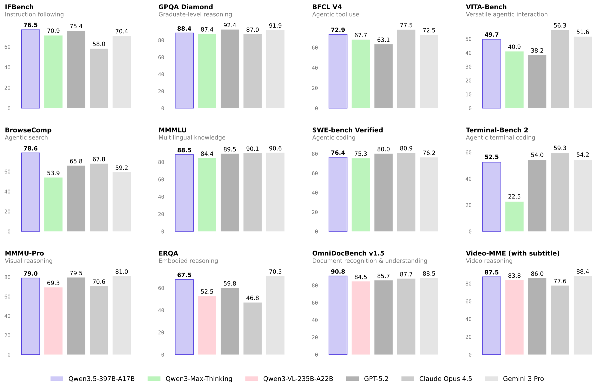
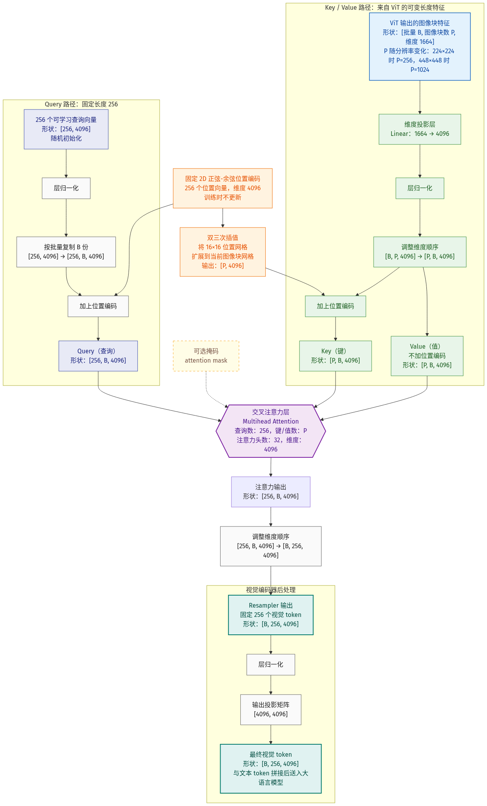
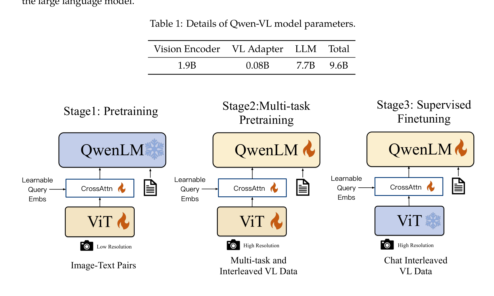
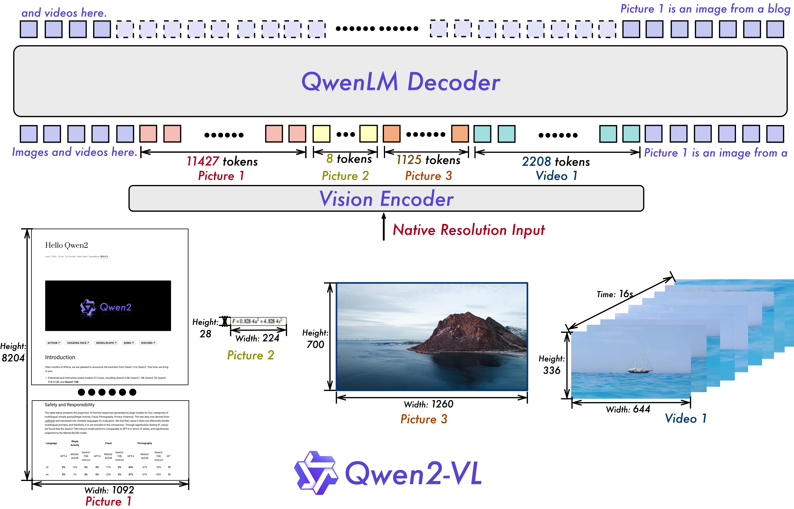
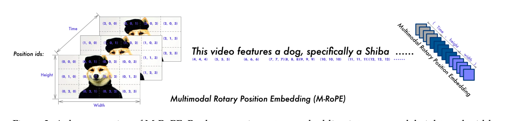
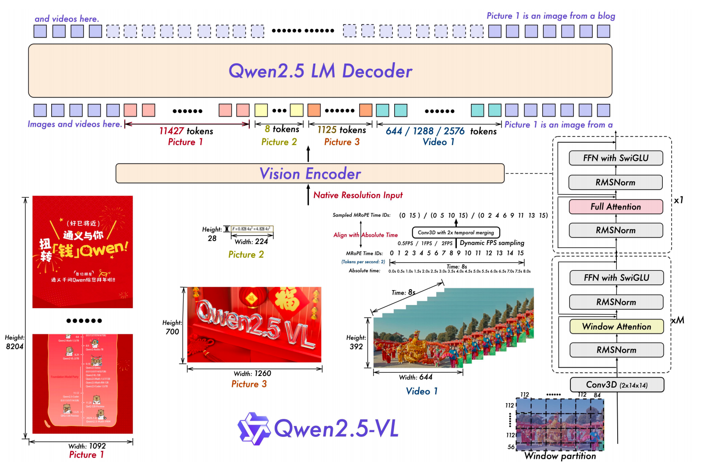
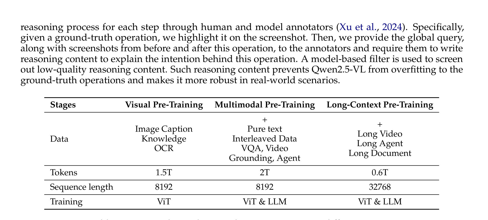
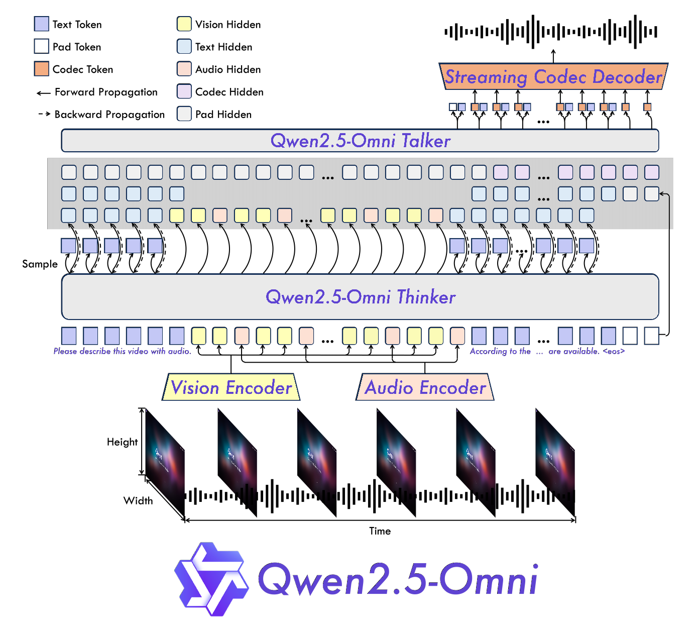
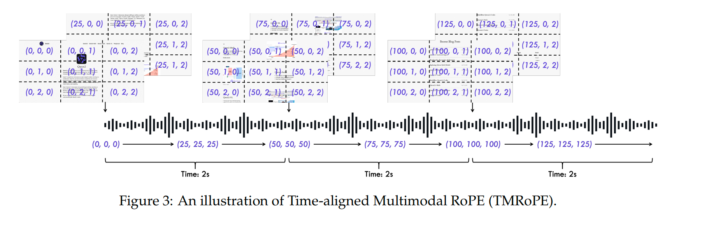
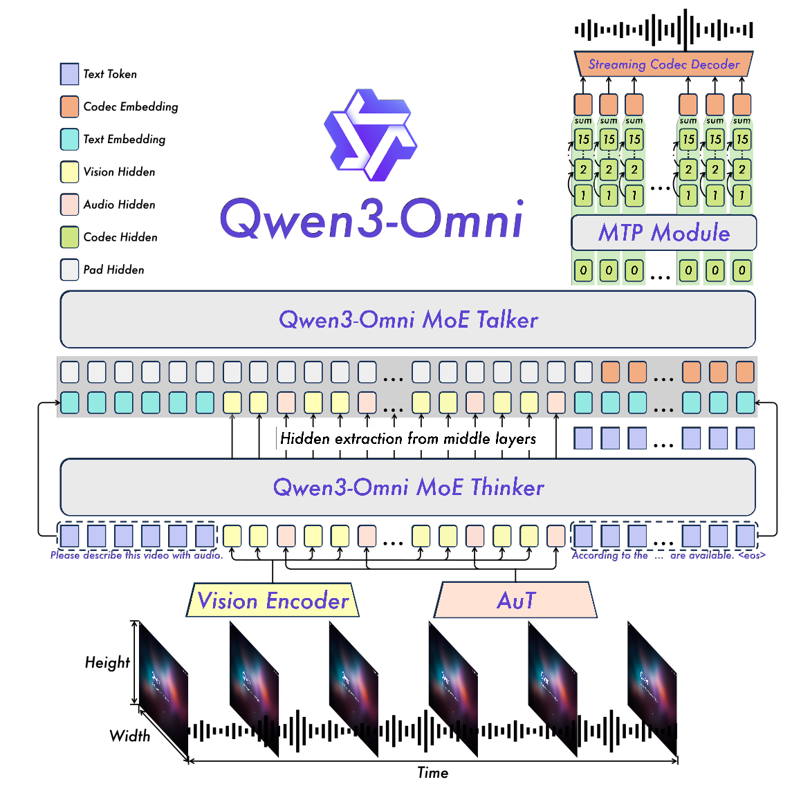

Qwen-VL与Omni
Qwen LLM 系列¶
Qwen3.5¶
📄 来源：Qwen3.5 没有发布 arXiv 技术报告，官方出处为博客 Qwen3.5: Towards Native Multimodal Agents（2026 年 2 月）与 ModelScope model card。Qwen3.5-Omni 论文参考文献对它的正式引用即此博客。以下内容整理自官方 model card。
原生多模态定位¶
Qwen3.5 是 Qwen 主线 LLM 首次实现原生多模态（Native Multimodality）的一代：
- 输入：文本 + 图像 + 视频，输出文本（type: Causal Language Model with Vision Encoder）
- 早期融合（early fusion）：预训练从第一天起就在多模态 token 上训练，不再是"先训纯文本 LLM、再挂 ViT 做对齐"的后挂式
- 直接后果：Qwen3.5 世代不再有独立的 VL 分支（没有 Qwen3.5-VL）——官方宣称其视觉理解全面超越同规模 Qwen3-VL，文本能力与 Qwen3 持平
- 训练基础设施优化后，多模态训练吞吐量接近纯文本基线（近 100% 硬件利用率）
首发模型¶
总参数 397B，每次前向只激活 17B。官方称预训练基座全维度基准媲美超 1T 参数的 Qwen3-Max-Base；32k/256k 下解码吞吐分别是 Qwen3-Max 的 8.6× / 19×。
架构总览¶
延续 Qwen3-Next 的混合架构路线，60 层的混合布局（model card 原文）：
Hidden Layout: 15 × ( 3 × (Gated DeltaNet → MoE) → 1 × (Gated Attention → MoE) )
即每 4 层为一组：3 层线性注意力（Gated DeltaNet）+ 1 层标准注意力（Gated Attention），重复 15 组共 60 层，每层后接 MoE。线性注意力承担大部分序列建模（复杂度线性，长上下文便宜），每隔 3 层用一次全注意力保证精确检索能力。
| 组件 | 配置 |
|---|---|
| 总层数 / 隐藏维度 | 60 层 / 4096 |
| Gated DeltaNet（线性注意力） | V 头 64 个、QK 头 16 个，head_dim 128 |
| Gated Attention（标准注意力） | Q 头 32 个、KV 头 2 个（极限 GQA），head_dim 256，RoPE 维度 64 |
| MoE | 512 个专家，每 token 激活 10 路由 + 1 共享，专家中间维度 1024 |
| 词表 | 248,320（约 25 万，较 Qwen3 的 15 万扩大，编解码效率提升 10%~60%） |
| 上下文 | 原生 262,144，可扩展至 1,010,000 |
| MTP | 多步训练（推理侧配合投机采样加速） |
源码验证¶
以上架构表已对照 config.json 与 transformers modeling_qwen3_5_moe.py 逐项核实（layer_types 数组确为 3×linear_attention + 1×full_attention 循环 60 层；DecoderLayer 源码按 block_type 选 GatedDeltaNet 或 Attention，每层接 SparseMoeBlock）。源码另有五个笔记级发现：
- 交错 MRoPE 进入主线 LLM：
mrope_interleaved: true，mrope_section: [11, 11, 10]——原生多模态使主线 LLM 直接内置 Interleaved MRoPE。配合下一条：rotary 子空间共 64 维 = 32 对 = 11+11+10 - 部分旋转：
partial_rotary_factor: 0.25——head_dim 256 的注意力头只旋转前 64 维（rope_theta = 1e7） - MTP 仅 1 层：
mtp_num_hidden_layers: 1，且共享主模型 embedding（mtp_use_dedicated_embeddings: false），推理时做投机采样草稿 - DeepStack 被移除：
deepstack_visual_indexes: []——Qwen3-VL 引入的多层视觉注入在 Qwen3.5 中禁用，视觉编码器（27 层、hidden 1152、SigLIP 风格 gelu_pytorch_tanh、patch 16、2×2 merge、out 4096）只从最后一层出 token - 线性注意力细节：GatedDeltaNet 输入侧带 kernel=4 的短卷积（conv1d），SSM 部分用 fp32（
mamba_ssm_dtype: float32）保数值稳定
详细网络结构¶
以下基于 transformers modeling_qwen3_5_moe.py 逐类拆解。
宏观架构¶
宏观上 Qwen3.5 就是 Vision Encoder + LLM 两大件，本质是一个 VLM，与整个 Qwen-VL 系列同构：
文本 ── tokenizer ─────────────────────────────┐
│
图像/视频 ── Vision Encoder ── merger ──────────┤──→ LLM ──→ 文本输出
(SigLIP 风格 ViT) │ (60 层 Hybrid MoE)
│
视觉 token 用 <vision_start>/<vision_end> 包裹，
以占位符插进文本序列，与文本 token 拼成一条序列
两大件：
- Vision Encoder：SigLIP 风格 ViT，把图像/视频编码成视觉 token；输出维度刻意等于 LLM 隐藏维度，经 merger 做 2×2 空间合并后直接拼进序列（DeepStack 在本代已禁用，只取最后一层输出）
- LLM：60 层 Hybrid MoE，负责理解拼接后的多模态序列并生成文本（下面详解）
与 Qwen-VL 系列的关系：结构范式完全一致——都是"视觉编码器 → 连接器（merger）→ LLM"三段式。唯一的本质区别不在结构而在训练方式：Qwen-VL 系列是"先有纯文本 LLM、再挂 ViT 做多阶段对齐"（后挂式）；Qwen3.5 是从预训练第一天起 ViT 与 LLM 就一起吃混合数据（原生早期融合），不存在事后的对齐阶段。
下面的详解聚焦 LLM 部分（Qwen3.5 相对前代最大的结构变化都在这里）。
单层数据流¶
60 层每层结构相同，只是 token mixer 二选一（pre-norm、残差连接是标准写法）：
x
├─ input_layernorm (RMSNorm)
│ ↓ Token Mixer：linear_attention 层用 GatedDeltaNet / full_attention 层用 Attention
├─ + 残差
├─ post_attention_layernorm (RMSNorm)
│ ↓ SparseMoeBlock（每层都有，不分类型）
└─ + 残差
layer_types 决定每层的 token mixer：[linear,linear,linear,full] × 15。MoE 每层都接，与 mixer 类型无关。
Gated DeltaNet ❓¶
线性注意力，占 60 层中的 45 层。Qwen3_5MoeGatedDeltaNet 是一个带门控的线性注意力/状态空间混合模块，思路近 Mamba/GatedDeltaNet 系。前向拆四步：
- 四路输入投影（都是无 bias Linear）：
in_proj_qkv：产出 Q、K、V（QK 各 16 头×128 维，V 64 头×128 维）in_proj_z：门控 z（value_dim）in_proj_b：β（每个 V 头一个标量，delta rule 的写入强度）in_proj_a：α（每个 V 头一个标量，配合 A_log/dt_bias 算衰减）- 短卷积：QKV 拼一起过
conv1d(kernel=4, groups=conv_dim)做深度可分离因果卷积——用极小的局部窗口补充线性注意力缺失的短程精确建模 - 门控 delta rule 递归：用可学习的
A_log（衰减）、dt_bias（时间步离散化）计算状态更新，chunk_gated_delta_rule（训练分块并行）/recurrent_gated_delta_rule（推理逐步）两套 kernel。状态 = 对历史 KV 的门控累加，复杂度随序列线性 - 门控输出：
RMSNormGated（用 z 门控的 RMSNorm）→out_proj回到 hidden_size
内部结构图（依源码 forward 数据流绘制）：
输入 x（4096 维）
┌───────────────┬────┴──────────┬───────────────┐
↓ ↓ ↓ ↓
QKV 投影 门控投影 z β 投影 α 投影
│ （64头×128） ↓ ↓
↓ sigmoid softplus(α+dt_bias)
因果短卷积（窗口4， =每头写入强度β ×−exp(A_log)
深度可分离）+ SiLU =每头衰减率 g
│
↓
拆出 Q(16头×128) K(16头×128) V(64头×128)
Q、K 各复制 4 份对齐 64 头，并做 L2 归一化
│
↓ ↓β ↓g
┌──────────────────────────────────────────────────────┐
│ 门控 Delta Rule 递归（线性复杂度的核心） │
│ │
│ 每个头维护一个固定大小的状态矩阵 S（128×128）： │
│ │
│ S_t = g_t·S_{t-1}·(I − β_t k_t k_tᵀ) + β_t·v_t k_tᵀ │
│ ↑衰减遗忘 ↑擦除k方向旧值 ↑写入新键值对 │
│ │
│ 读取 o_t = S_t · q_t │
│ │
│ 训练：分块并行 kernel 推理：逐步递归，状态大小恒定 │
└──────────────────────────────────────────────────────┘
↓
门控 RMSNorm（用 z 逐元素调制输出）
↓
输出投影 → 回到 4096 维
直观理解：状态矩阵 S 就是一块固定大小的"记忆黑板"——每来一个 token，先按 g 把旧字迹淡化，再用 β 控制"擦掉 k 方向的旧内容、写入新的 (k,v) 对"（"先擦后写"正是 delta rule 区别于普通线性注意力单纯累加之处），读取时拿 q 去黑板上查。黑板大小与序列长度无关。
关键点：它没有 KV cache 爆炸问题——推理时维护固定大小的循环状态而非全部历史 KV，这是长上下文吞吐远高于全注意力的根源。
Gated Attention¶
标准注意力，占 60 层中的 15 层。Qwen3_5MoeAttention 是加了改造的 GQA：
- 输出门控：
q_proj输出维度是num_heads × head_dim × 2，chunk成两半——一半是 query，一半是 gate，最终注意力输出会被这个 gate 调制（attn_output_gate: true） - QK-Norm：
q_norm、k_norm是只作用在 head_dim 上的 RMSNorm，稳定注意力分数 - 极限 GQA：32 个 Q 头共享 2 个 KV 头（16:1），大幅压缩 KV cache
- 部分旋转：head_dim 256，仅前 64 维施加 RoPE（partial_rotary_factor 0.25），且用主线 LLM 的交错 MRoPE
SparseMoeBlock¶
每层都接的 MoE。Qwen3_5MoeSparseMoeBlock = 路由专家 + 共享专家双路相加：
h
├─ 路由路：TopKRouter → softmax → 取 top-10 专家 → 权重归一化
│ Experts（512 个专家，gate_up/down 存成 3D 张量批量算）
│ SwiGLU：act(gate) * up → down
├─ 共享路：shared_expert（1 个 MLP，intermediate 1024）
│ × sigmoid(shared_expert_gate(h)) ← 共享专家也带门控
└─ 两路相加
- 512 专家、每 token 激活 10 路由 + 1 共享：每 token 实际只过 11 个专家的计算量，这是 397B 总参却只激活 17B 的来源
- 路由权重 top-10 后重新归一化（
/= sum），保证权重和为 1 - 专家权重用
nn.Parameter的 3D 张量(512, 2×1024, 4096)存储，按命中专家index_add_聚合，避免 for-loop 逐专家
单层结构总览¶
┌────────── linear_attention 层 (×45) ──────────┐
x → RMSNorm →┤ GatedDeltaNet: qkvzba投影→深度卷积→门控delta递归→门控RMSNorm→out │→ +x
└───────────────────────────────────────────────┘
或
┌────────── full_attention 层 (×15) ────────────┐
x → RMSNorm →┤ Attention: QK-Norm + 输出门控 + GQA32:2 + 部分RoPE │→ +x
└───────────────────────────────────────────────┘
→ RMSNorm → SparseMoeBlock(512专家 top10 + 1共享, 均带门控) → +x
其他关键能力¶
- 语言覆盖：119 种 → 201 种语言和方言
- RL 规模化：百万级 agent 环境上做强化学习，任务分布渐进复杂化，通用 Agent 能力显著增强（GUI 操作、视觉编程、空间智能、工具调用）
- 对本笔记 Omni 线的意义：Qwen3.5-Omni 的 Thinker LLM 与视觉编码器都直接取自 Qwen3.5（论文原话 "adopted from Qwen3.5"），Omni 只需在其上增加 AuT 音频编码器和 Talker/MTP/Code2Wav 语音输出侧

Qwen3.5-397B-A17B 官方基准成绩总览（图源：Qwen 官方 model card）产品线演进¶
Qwen2.5 世代：Qwen2.5(文本) + Qwen2.5-VL + Qwen2.5-Omni 三条线
Qwen3 世代： Qwen3(文本) + Qwen3-VL + Qwen3-Omni 三条线
Qwen3.5 世代：Qwen3.5(原生多模态，文本+视觉合一) + Qwen3.5-Omni(+音频/语音) 两条线
Qwen3-Omni 论文 §6 的"非退化实验"为这次合并铺了路：既然证明早期混入多模态数据不损害文本能力，独立维护文本线 + VL 线就失去了必要。
Qwen-VL与Omni¶
📄 涉及论文链接： - Qwen-VL: A Versatile Vision-Language Model | PDF - Qwen2-VL: To See the World More Than Your AI Can | PDF - Qwen2.5-VL Technical Report | PDF - Qwen2.5-Omni Technical Report | PDF
作者：Qwen Team, Alibaba Group
时间跨度：2023 年 8 月 - 2025 年 3 月
目录¶
- 核心要点
- 1. Qwen-VL：Qwen 多模态的起点
- 1.2.3 Flamingo Perceiver Resampler：Qwen-VL Resampler 的源头
- 2. Qwen2-VL：关键跃迁（1️⃣动态分辨率、2️⃣MRoPE、3️⃣Video 用更通用的方式训练）
- 3. Qwen2.5-VL：主力视觉模型
- 4. Qwen2.5-Omni：全模态模型
- 5. Qwen3-VL：视觉语言模型的新高度
- 6. Qwen3-Omni：全模态统一模型的里程碑
- 7. Qwen3.5-Omni：全模态模型的最新突破
- 8. 总结与对比
- 9. 面试问题
核心要点¶
- 技术路线演进：Qwen-VL（2023.08）→ Qwen2-VL（2024.09）→ Qwen2.5-VL（2025.02）→ Qwen2.5-Omni（2025.03），从视觉语言模型发展到全模态模型。
- 架构演进：从 Qwen-VL 的"ViT + Cross-Attention Adapter + LLM"三段式结构，到 Qwen2-VL 引入 M-RoPE 和动态分辨率，再到 Qwen2.5-VL 的窗口注意力优化，最终到 Qwen2.5-Omni 的 Thinker-Talker 全模态架构。
- 关键技术创新：M-RoPE（多维旋转位置编码）、窗口注意力（32 层中仅 4 层全注意力）、动态 FPS 采样、绝对时间对齐、TMRoPE（时间对齐多模态 RoPE）。
- 规模增长：训练数据从 Qwen-VL 的数十亿 token 增长到 Qwen2.5-VL 的 4.1T tokens，模型参数从 Qwen-VL 的 ~8B 扩展到 Qwen2.5-VL 的 72B。
- 能力扩展：从图文理解 → 视频理解 → 空间定位 → Agent 操作 → 全模态感知（文本+图像+音频+视频）。
各代核心创新点¶
Qwen-VL：Qwen 多模态的起点，采用 ViT + Cross-Attention Adapter + LLM 三段式架构；支持多图输入、边界框定位等能力；通过三阶段训练（预训练 → 多任务预训练 → 指令微调）实现视觉-语言对齐。
Qwen2-VL：最重要的技术跃迁，引入 M-RoPE（将位置编码分解为时间、高度、宽度三个维度）和 Naive Dynamic Resolution（根据图像原始尺寸动态调整 token 数量）；首次支持视频理解。
Qwen2.5-VL：工程优化版本，引入窗口注意力（32 层 ViT 中仅 4 层使用全注意力，计算复杂度从二次方降至线性）、动态 FPS 采样、绝对时间 MRoPE（时间 ID 对应实际时间戳而非帧索引）；数据规模从 1.2T 扩展到 4.1T tokens；Agent 能力飞跃（ScreenSpot Pro 从 1.6 跃升至 43.6）。
Qwen2.5-Omni：全模态模型，采用 Thinker-Talker 双模块架构；引入 TMRoPE（时间对齐多模态 RoPE），统一处理文本、图像、音频、视频的时间戳；支持流式语音输出；首次实现全模态感知（文本+图像+音频+视频）。
贯穿四代：始终使用 Transformer 解码器作为语言模型骨干，持续改进位置编码（从标准 RoPE → M-RoPE → 绝对时间 MRoPE → TMRoPE）；视觉编码器从冻结 ViT 发展到从头训练的现代 ViT；分辨率处理从固定 448×448 发展到动态原生分辨率。
1. Qwen-VL¶
1.1 背景与动机¶
在 GPT-4V、LLaVA 等视觉语言模型（VLM）的启发下，Qwen 团队于 2023 年 8 月发布 Qwen-VL，目标是构建一个多能、通用的视觉语言模型，支持： - 图像理解与描述 - 视觉问答（VQA） - 图像定位（Grounding） - 多图理解 - 图文交错生成
1.2 架构设计¶
Qwen-VL 采用经典的三段式架构：
三大组件：
| 组件 | 具体实现 | 作用 |
|---|---|---|
| 视觉编码器 | OpenCLIP ViT-bigG（参数量约 1.9B） | 将图像转换为视觉特征序列 |
| 适配器 | Cross-Attention 层 | 将视觉特征投影到语言模型的嵌入空间 |
| 语言模型 | Qwen-7B（冻结预训练权重） | 理解文本并生成回答 |
1.2.1 视觉编码器¶
Qwen-VL 使用 OpenCLIP 的 ViT-bigG 预训练权重初始化视觉编码器，patch size 为 14。这是 Qwen 多模态系列中唯一使用 OpenCLIP ViT 的版本，后续版本改用 DFN 预训练 ViT（Qwen2-VL）、从头设计 ViT（Qwen2.5-VL）和 SigLIP-2（Qwen3-VL）。
位置编码
- 采用 learned absolute position embedding（可学习的绝对位置嵌入），是标准 ViT 的做法。
- 预训练分辨率 224×224，patch size 14，共 (224/14)² = 256 个 patch 对应 256 个位置向量，形状为
(256, width)。 - 不使用 CLS token：Qwen-VL 的 ViT 没有标准 ViT 中用于聚合全局信息的 CLS token，全局特征聚合由后续的 Resampler（256 个可学习 query 的 cross-attention pooling）完成。
- 随机初始化：源码显示位置嵌入是随机初始化的（
nn.Parameter(scale * torch.randn(256, width))），并非加载 OpenCLIP 预训练的位置编码——因为 Resampler 结构改变了聚合方式，位置嵌入需要与 Resampler 协同从头学习。
分辨率变化处理（源码证实）
Stage 1 使用 224×224（与预训练一致），Stage 2 提升到 448×448，但位置嵌入参数始终保持为 256 个位置向量（对应 224×224 下的 16×16 patch）。两个阶段的处理方式如下：
- Stage 1（224×224）：patch 数 = (224/14)² = 256，与位置嵌入数量一致，无需插值，直接相加。
- Stage 2（448×448）：patch 数 = (448/14)² = 1024，位置嵌入数量仍为 256，通过 bicubic 双三次插值动态扩展到 1024 后再相加。
- 插值在前向传播中动态执行，而非预先初始化。核心代码来自
visual.py的VisionTransformer.forward：# self.positional_embedding: (256, width)，始终是 256 个位置向量 x = x + get_abs_pos(self.positional_embedding, x.size(1))get_abs_pos函数根据目标 patch 数自动判断：若与源大小（√256=16）不一致，则将位置嵌入 reshape 为(1, 16, 16, width)后调用F.interpolate(..., mode="bicubic")插值到目标尺寸；否则直接返回。
1.2.2 适配器¶
适配器（Resampler）是 Qwen-VL 中最具特色的模块，位于 ViT 和 LLM 之间，架构思想来自 DeepMind 的 Perceiver Resampler（即 Flamingo 中使用的视觉压缩模块）。详见 1.2.3 Flamingo Perceiver Resampler：Qwen-VL Resampler 的源头。它要解决的核心问题是：ViT 输出的 patch 特征序列是变长的（224×224 输入产生 256 个 patch，448×448 输入产生 1024 个 patch），且维度与 LLM 嵌入空间不一致。Cross-Attention 把这段变长序列压缩成固定长度，同时投影到 LLM 能理解的语义空间。
核心组件
- 可学习 query（256 个）
- Resampler 维护一组 256 个可学习向量，相当于 256 个"探针"，在训练中学会主动从图像特征中抓取有用信息。
-
对应 grid_size=16（16×16=256），也决定了最终送给 LLM 的视觉 token 数。
-
来自 ViT 的 key/value（变长）
- ViT 输出的 patch 特征序列即为 cross-attention 的 key 和 value。
- 224×224 输入 → 256 个 key/value；448×448 输入 → 1024 个 key/value。
-
key/value 数量随分辨率变化，但 query 始终 256 个。
-
线性投影 kv_proj
-
ViT-bigG 的输出维度（1664）与 Resampler 工作维度（对齐 LLM 的 4096）不同，key/value 进入 attention 前先过线性层做维度对齐。
-
位置编码：固定 2D sincos（同一组，两处使用）
- Resampler 中只有一组位置编码
self.pos_embed，是固定、不可学习的 2D sincos 位置编码（requires_grad=False），形状为[256, 4096]。 - query 端：256 个可学习 query 直接加上这组固定 sincos 位置编码（query 数量也是 256，无需插值）。
- key 端：把这组 256 个 sincos 位置编码通过
get_abs_pos做 bicubic 插值到当前 patch 数 P（256 或 1024），再加到 key 上。 - value 端不加位置编码：这是 attention 的标准做法，位置信息只参与相似度计算，不参与值加权。
- 注意：这与 ViT 自身的
self.positional_embedding完全不同。ViT 用的是可学习的绝对位置嵌入（1.2.1 节），而 Resampler 用的是固定的 sincos 位置编码。
固定 sincos 位置编码的生成方式
self.pos_embed 在 Resampler.__init__ 中通过以下调用生成：
get_2d_sincos_pos_embed(embed_dim=4096, grid_size=16)
│
├─ 构造 16×16 网格坐标：grid_h = [0..15], grid_w = [0..15]
├─ 对 grid_h 做 1D sincos：占 embed_dim 前 2048 维
├─ 对 grid_w 做 1D sincos：占 embed_dim 后 2048 维
└─ 拼接得到 [256, 4096]
其中 1D sincos 公式为：
生成后转成 torch.Parameter 并设置 requires_grad_(False)，所以训练过程中不会更新。
为什么 Resampler 用固定 sincos，而 ViT 用可学习位置嵌入？
- ViT 的 patch token 本身不携带空间信息（只是把图像切块后线性投影），所以需要用可学习的位置嵌入来让模型自己学会空间表示。
- Resampler 的 query 本身就是可学习向量（
self.query），它已经在学习"关注什么"。如果位置编码也学习，会让 query 同时承担"关注什么"和"在哪里"两个任务，耦合度高。用固定 sincos 提供明确的空间先验，让self.query专注于学习语义内容，这是 Perceiver Resampler 的标准做法。
前向传播流程
- 输入：ViT 输出的 patch 特征序列，长度 N（256 或 1024）。
- KV 投影：patch 特征经线性层投影到 Resampler 工作维度。
- 位置编码插值：把 Resampler 中那组 256 个固定 sincos 位置编码通过 bicubic 插值扩展到 N 个，加到 key 上。
- 准备 query：256 个可学习 query 加上同一组固定 sincos 位置编码（无需插值），并按 batch 复制 N 份。
- Cross-Attention：Q = query（256 个），K = V = ViT patch 特征（N 个）；每个 query 对所有 key 算注意力权重，得到对所有 value 的加权和，输出仍是 256 个向量。
- 后处理：LayerNorm + 线性投影，维度对齐到 LLM 嵌入维度（4096）。
- 输出：固定 256 个视觉 token，送进 LLM 与文本 token 一起处理。
结构总览

图中要点： - 两条输入路径：左侧 Query 路径固定 256 个查询向量，右侧 Key/Value 路径来自 ViT 的可变长度特征 - 维度投影：ViT 输出维度 1664 先投影到 4096，再进入注意力计算 - K 加位置编码，V 不加：attention 标准做法，位置信息只参与相似度计算，不参与值加权 - 同一组固定 2D 正弦-余弦位置编码的两处用途：插值到 P 后加到 Key，直接加到 Query（Query 数本来就是 256，无需插值） - 形状流转：[B, P, 1664] → [B, P, 4096] → [P, B, 4096] → [256, B, 4096] → [B, 256, 4096] - Resampler 之外还有后处理：层归一化 + 输出投影矩阵属于视觉编码器（VisionTransformer），不属于 Resampler 内部 - ViT 位置嵌入 vs Resampler 位置编码：ViT 用可学习的绝对位置嵌入，Resampler 用固定的 2D 正弦-余弦位置编码，二者名字相似但完全不同
为什么选 Cross-Attention，而不是更简单的方案
对比三种 ViT→LLM 连接方式：
| 方案 | 代表模型 | 特点 |
|---|---|---|
| 线性投影 | LLaVA | 对每个 patch 独立线性变换，简单但序列长、patch 间无交互 |
| 平均池化 / CLS token | 标准 ViT | 压成单向量，损失大量细节 |
| Cross-Attention Resampler | Qwen-VL | 用 256 个可学习 query 主动采样，每个输出都融合全局上下文 |
Cross-Attention 的优势： - 输出长度可控且固定，不随图像分辨率膨胀 - 每个输出 token 聚合了全局信息，不是孤立的 patch - 可学习 query 能学会关注对 LLM 最有用的语义，相当于"智能压缩器" - 同时完成压缩、维度对齐、语义抽取三件事
为何后续版本放弃 Cross-Attention
从 Qwen2-VL 起，Cross-Attention Resampler 被替换为更轻量的 MLP PatchMerger，原因是： - Cross-Attention 计算开销大（256 query × N key 的全局注意力） - 训练不够稳定 - Qwen2-VL 引入动态分辨率后 patch 数量变化范围更大，代价进一步放大
MLP PatchMerger 用几层简单 MLP 把相邻 patch 合并，既轻量又能保留细粒度信息，更适合后续的高分辨率和视频场景。Qwen-VL 是 Qwen 多模态系列中唯一使用 Cross-Attention Resampler 的版本。
关键设计选择：
- Cross-Attention 而非线性投影：相比 LLaVA 的简单线性层，Cross-Attention 能更好地融合视觉和语言信息（详见 1.2.2）。这是 Qwen 系列中唯一使用 Cross-Attention Resampler 作为连接器的版本，从 Qwen2-VL 起全部改为 MLP PatchMerger。
- 固定分辨率（仅 Qwen-VL）：所有图像统一缩放到正方形（Stage 1 为 224×224，Stage 2 及推理为 448×448），简化处理但会引入非正方形图像的形变并丢失细节。从 Qwen2-VL 起改为动态分辨率，保留原始宽高比。
- 特殊标记：引入
<img>、</img>、<box>、</box>等标记，支持多图输入和边界框定位。
1.2.3 Flamingo Perceiver Resampler¶
Qwen-VL 的 Resampler 与 DeepMind 2022 年提出的 Flamingo 模型中使用的 Perceiver Resampler 属于同一架构家族。Qwen-VL 源码直接将其实现命名为 perceiver-resampler，而 Flamingo 是较早将这一结构用于视觉-语言模型的代表性工作之一。理解三者的关系，有助于看清 Qwen-VL 在连接器设计上的取舍。
三者关系
Perceiver（通用框架：任意输入 → 固定 latent queries）
↓ 简化为视觉-语言专用
Perceiver Resampler（Flamingo：压缩视觉特征为固定 token）
↓ 在 Qwen-VL 中进一步简化为单层
Qwen-VL Resampler（1 层 cross-attention，256 个 query）
1. Perceiver（2021，DeepMind）
- 通用架构，处理任意高维输入（图像、视频、音频、点云）
- 用固定数量的 latent queries 作为 query
- 通过 cross-attention 从变长输入中抽取信息
- latent 之间还有 self-attention
- 多层 cross-attention 与 self-attention 交替
2. Perceiver Resampler（Flamingo 2022，DeepMind）
Perceiver 的轻量特化版，专门放在视觉编码器和大语言模型之间，把变长的视觉特征压缩成固定数量的视觉 token。
具体架构参数（来自论文附录 Table 1）：
| 参数 | 数值 |
|---|---|
| 层数 | 6 层 |
| 隐藏维度 | 1536 |
| 注意力头数 | 16 |
| 输出 token 数 | 64 |
| 前馈层维度 | \(4D = 6144\) |
| 激活函数 | Squared ReLU |
关键设计： - Q 来自 64 个可学习 latent queries - 这意味着 latents 之间会通过 K/V 互相注意 - 位置编码：使用可学习的时间位置编码处理视频帧，没有显式空间网格位置编码
3. Qwen-VL Resampler
Qwen-VL 源码中 Resampler 类的注释直接写明：
"A 2D perceiver-resampler network with one cross attention layers by
(grid_size**2) learnable queries and 2d sincos pos_emb"
它是 Perceiver Resampler 思想的进一步简化：
| 对比项 | Flamingo Perceiver Resampler | Qwen-VL Resampler |
|---|---|---|
| 层数 | 6 层 | 1 层 |
| 输出 token 数 | 64 | 256 |
| 隐藏维度 | 1536 | 4096（与 Qwen-7B 对齐） |
| 注意力头数 | 16 | 32 |
| K/V 来源 | 视觉特征 + latents | 仅视觉特征 |
| Latents 是否互相注意 | 是 | 否 |
| 位置编码 | 可学习时间编码 | 固定 2D sincos |
Qwen-VL 为什么这样简化？
- 计算效率：单层 cross-attention 比 6 层轻量很多
- 输出更多 token：256 个 query 比 64 个保留更多视觉细节
- K/V 仅来自视觉特征：减少 latents 互相干扰，让 query 专注于从图像中采样
- 固定 sincos 位置编码：为 query 提供稳定的空间先验，避免额外可学习参数
总结
Flamingo 的 Perceiver Resampler 证明了"用固定数量 query 做 cross-attention 压缩视觉特征"这条路可行；Qwen-VL 把它改造成更轻量、更适合自身架构的单层版本。从 Qwen2-VL 开始，Qwen 系列又进一步放弃了 cross-attention，改用 MLP PatchMerger，说明连接器设计一直在向更简单高效的方向演进。
Sources: - Flamingo paper (arXiv:2204.14198) - OpenFlamingo implementation - Qwen-VL visual.py source code
1.3 训练流程¶

Figure 3: Qwen-VL 的三阶段训练流程Qwen-VL 采用三阶段训练，通过逐步解冻和升级训练策略，实现视觉-语言对齐：
第一阶段：预训练（Pre-training）
- 目标：建立视觉编码器与语言模型之间的基础对齐
- 数据：大规模网络爬取的弱标注图文对（原始 5B 对，清洗后保留 1.4B 对，77.3% 英文 + 22.7% 中文）
- 训练策略：冻结 LLM，只训练 ViT 和 Adapter
- 分辨率：224×224
- 训练规模：学习率 2e-4，batch size 30720，训练 50,000 steps，约 1.5B 图文对
核心设计：让 ViT 学会把视觉特征"翻译"成 LLM 能理解的语义空间，而不破坏 LLM 已有的语言能力。
第二阶段：多任务预训练（Multi-task Pre-training）
- 目标：通过多样化任务学习，提升模型的泛化能力和细粒度理解
- 数据：7 类任务（共约 77M 样本）
- Captioning（19.7M）：为图像生成自然语言描述，如"一只猫坐在沙发上"
- VQA（3.6M）：根据图像回答自然语言问题，如"图中有几个人？"
- Grounding（3.5M）：根据文本描述在图像中定位对应区域并输出边界框，如"找出图中的红色汽车"
- Reference Grounding（8.7M）：根据含上下文指代关系的表达式定位目标，如"站在穿蓝衣服的人左边的那个女孩"
- Grounded Captioning（8.7M）：生成图像描述的同时标注出描述中对象的边界框，描述与定位联合输出
- OCR（24.8M）：识别图像中的文字内容，如招牌、文档、字幕上的文本
- 纯文本自回归（7.8M）：不输入图像，只用纯文本训练 LLM 的自回归生成能力，防止多模态训练遗忘原有语言能力
- 训练策略：解冻 LLM，ViT + Adapter + LLM 全模型训练
- 分辨率：提升到 448×448（保留更多细节）
- 序列长度：2048（交错图文数据）
核心设计：多任务混合训练让模型学会处理 VQA、定位、OCR 等不同任务，同时交错数据格式让模型能处理多图输入。
第三阶段：指令微调（Supervised Fine-tuning）
- 目标：对齐用户意图，生成可交互的聊天机器人（Qwen-VL-Chat）
- 数据：多模态指令微调数据 350k（包括 caption、LLM self-instruction 生成的对话、人工标注数据），混合纯文本对话数据
- 训练策略：冻结 ViT，只训练 LLM 和 Adapter
- 格式：ChatML 格式的对话数据
核心设计：专注于对话能力对齐，不再改变 ViT 的视觉表征。通过指令微调，模型从"能理解视觉"升级为"能按用户要求回答视觉问题"。
三阶段的设计逻辑
- 逐步解冻：第一阶段冻结 LLM（保护语言能力）→ 第二阶段全解冻（深度对齐）→ 第三阶段冻结 ViT（稳定视觉表征）
- 分辨率递增：224×224 → 448×448，平衡计算成本和信息密度
- 任务复杂度递增：弱标注图文对 → 多任务精细标注 → 高质量对话数据
这种分阶段训练是早期多模态大模型的典型范式，后续版本（Qwen2-VL 起）改进了训练策略和数据配比，但核心思路一脉相承。
1.4 能力与局限¶
支持的能力： - 图像描述与理解 - 视觉问答（VQA） - 图像定位（Grounding）：输出边界框坐标 - 多图理解：支持多张图片的交错输入 - 少样本学习（Few-shot）
局限性： - 固定分辨率（448×448）限制了细粒度理解 - 不支持视频理解 - Adapter 设计相对保守（Cross-Attention 计算开销大） - 缺乏统一的位置编码处理多模态信息
2. Qwen2-VL¶
2.1 核心改进¶
Qwen2-VL（2024.09）是 Qwen 多模态系列的最重要技术跃迁，引入了两项关键创新：

Figure 2: Qwen2-VL 架构，引入 M-RoPE 和动态分辨率处理两大创新：
| 创新点 | 技术细节 | 意义 |
|---|---|---|
| M-RoPE | 将位置编码分解为时序、高度、宽度三个维度 | 统一处理文本、图像、视频的位置信息 |
| 动态分辨率 | 根据图像原始尺寸动态调整 token 数量 | 保留细粒度信息，避免固定缩放的损失 |
2.1.1 架构组成¶
Qwen2-VL 的架构由两个独立来源的组件组合而成：
LLM（Qwen2 LLM）： - 直接继承自 Qwen2 语言模型 - 架构：RMSNorm + SwiGLU + RoPE - 这是 Qwen2 LLM 本身的架构，不是 Qwen2-VL 的创新
ViT（来自 DFN 预训练）： - 初始化自 DFN（Data Filtering Networks）的预训练 ViT（参数量约 675M） - 架构：LayerNorm + GELU（标准 ViT 组件） - 唯一修改：将绝对位置嵌入替换为 2D-RoPE - 其他组件（归一化、激活函数）保持原样
训练过程： - 第一阶段专门训练 ViT（600B tokens），使其适应视觉-语言对齐任务 - 但这是在 DFN 预训练基础上的继续训练，不是从头设计
注意：Qwen2-VL 的 RMSNorm 和 SwiGLU 来自 LLM（Qwen2 LLM），ViT 本身仍使用传统的 LayerNorm + GELU。直到 Qwen2.5-VL 才将 ViT 改为 RMSNorm + SwiGLU。
2.2 M-RoPE¶

Figure 3: M-RoPE 将旋转位置编码分解为时间、高度、宽度三个维度核心思想：传统 1D-RoPE 只能编码一维位置信息，无法表达多模态输入的空间结构。M-RoPE（Multimodal Rotary Position Embedding）通过将旋转位置编码分解为三个独立维度，统一处理文本、图像、视频的位置信息。
🚗命名澄清：2D-RoPE vs M-RoPE
这两个词在文档里经常出现，但作用于不同模块： - 2D-RoPE：用在 ViT（视觉编码器）内部，只编码图像/视频 patch 的空间位置 (h, w)。即使处理视频，ViT 仍然只用 2D-RoPE。 - M-RoPE / MRoPE / TMRoPE / Interleaved MRoPE：用在 LLM 内部，编码拼接后的文本+视觉 token 序列，同时看 (t, h, w) 三个维度。 - 视频的时间信息不是 ViT 的 2D-RoPE 给的，而是 ViT 的 3D patch 分组保留时间顺序 + LLM 的 M-RoPE 的
tID 共同实现的。 - 单独出现的 RoPE 要看上下文：说 LLM 一般指标准 1D-RoPE（如 Qwen-VL 的 LLM），说 ViT 一般指 2D-RoPE。
三维位置编码：
Position_ID = (temporal_id, height_id, width_id)
| 模态 | 时间维度 | 高度维度 | 宽度维度 |
|---|---|---|---|
| 文本 | 递增（token 顺序） | 与时间维度相同 | 与时间维度相同 |
| 图像 | 恒定（单张图） | patch 行索引 | patch 列索引 |
| 视频 | 逐帧递增 | patch 行索引 | patch 列索引 |
关键设计： - 文本：三个维度使用相同的 position ID，等价于 1D-RoPE - 图像：时间维度 ID 在整张图中保持恒定，高度和宽度维度根据 patch 在图像中的位置分配不同的 ID - 视频：作为帧序列处理，每帧的时间 ID 递增，高度和宽度维度与图像相同 - 多模态混合输入：各模态的位置编号通过递增前一模态的最大 position ID 来初始化
优势： - 统一的位置编码框架，支持文本、图像、视频混合输入 - 保留空间结构信息（高度、宽度），使模型能感知 token 在原图中的位置 - 天然支持多图和视频的时序建模 - 降低图像和视频的 position ID 值，使模型在推理时能外推到更长的序列
位置子空间的交互性
把维度分成时间、高度、宽度三组，会不会导致 attention 时跨维度交互失去意义？不会。原因有两个：
-
位置编码直接旋转特征本身：M-RoPE 不是给特征额外拼接三个位置向量，而是直接对特征向量的不同维度做旋转。旋转后每个维度仍然是"语义信息 + 位置信息"的混合体。
-
Q/K 投影会重新混合所有维度：注意力计算时，\(W_Q\) 和 \(W_K\) 是 \(d \times d\) 的全连接投影矩阵，会把时间组、高度组、宽度组的维度重新线性组合。因此即使位置编码在三个子空间独立进行，attention 分数 \(q^\top k\) 仍然能综合反映时间距离、高度距离、宽度距离三者的共同影响。
所以 M-RoPE 的"分三组"是在位置编码层面独立表示三个轴，在注意力层面则通过投影保留跨维度的交互能力。
2.2.1 1D-RoPE vs M-RoPE¶
为了理解两者的本质区别，我们从数学公式出发进行详细推导。
（1）1D-RoPE 的数学表达
对于一个 \(d\) 维向量 \(\mathbf{x} = [x_1, x_2, \dots, x_{d-1}, x_d]\) 在位置 \(m\) 处，1D-RoPE 将其分为 \(d/2\) 对，对每对 \((x_{2i-1}, x_{2i})\) 进行旋转：
其中： - \(i = 1, 2, \dots, d/2\) 表示第 \(i\) 对维度 - \(\theta_i = 10000^{-2i/d}\) 是预设的频率参数（LLaMA 中基频为 10000 或 500000） - \(m\) 是单一的位置索引（如第 \(m\) 个 token）
紧凑表达：整个向量的旋转可以写成：
其中 \(\text{rotate}(\mathbf{x}) = [-x_2, x_1, -x_4, x_3, \dots]\)，\(\odot\) 表示逐元素乘法。
关键特点：所有维度对都使用同一个位置索引 \(m\)，只是旋转角度不同（由 \(\theta_i\) 控制）。
（2）M-RoPE 的数学表达
M-RoPE 把 \(d\) 维向量的维度对（共 \(N=d/2\) 对）按配置 mrope_section 分成三段，分别对应时间、高度、宽度。记：
对应到维度上，就是：
注意：这个式子只说明维度被分成哪三段；具体的时间、高度、宽度位置索引 \(t, h, w\) 并不在这里，而是出现在下面每个组的旋转矩阵里，也出现在紧凑表达 \(\mathbf{c}\)、\(\mathbf{s}\) 中。
例如
Qwen2-VL-7B-Instruct的mrope_section = [16, 24, 24]，head_dim = 128，即时间占 32 维、高度 48 维、宽度 48 维，并非严格三等分。
对于位置 \((t, h, w)\)，每段维度对独立应用 RoPE：
时间组（前 \(n_t\) 对）： $$ \begin{pmatrix} x_{2i-1}' \ x_{2i}' \end{pmatrix} = \begin{pmatrix} \cos(t\theta_i) & -\sin(t\theta_i) \ \sin(t\theta_i) & \cos(t\theta_i) \end{pmatrix} \begin{pmatrix} x_{2i-1} \ x_{2i} \end{pmatrix}, \quad i \in [1, n_t] $$
高度组（中间 \(n_h\) 对）： $$ \begin{pmatrix} x_{2i-1}' \ x_{2i}' \end{pmatrix} = \begin{pmatrix} \cos(h\theta_i) & -\sin(h\theta_i) \ \sin(h\theta_i) & \cos(h\theta_i) \end{pmatrix} \begin{pmatrix} x_{2i-1} \ x_{2i} \end{pmatrix}, \quad i \in [n_t+1, n_t+n_h] $$
宽度组（后 \(n_w\) 对）： $$ \begin{pmatrix} x_{2i-1}' \ x_{2i}' \end{pmatrix} = \begin{pmatrix} \cos(w\theta_i) & -\sin(w\theta_i) \ \sin(w\theta_i) & \cos(w\theta_i) \end{pmatrix} \begin{pmatrix} x_{2i-1} \ x_{2i} \end{pmatrix}, \quad i \in [n_t+n_h+1, N] $$
紧凑表达： $$ f(\mathbf{x}, t, h, w) = \mathbf{x} \odot \mathbf{c} + \text{rotate}(\mathbf{x}) \odot \mathbf{s} $$
其中： $$ \mathbf{c} = [\underbrace{\cos(t\theta_1), \dots, \cos(t\theta_{n_t})}{\text{时间}}, \underbrace{\cos(h\theta}), \dots, \cos(h\theta_{n_t+n_h}){\text{高度}}, \underbrace{\cos(w\theta] $$}), \dots, \cos(w\theta_N)}_{\text{宽度}
（3）核心区别对比
| 特性 | 1D-RoPE | M-RoPE |
|---|---|---|
| 位置参数 | 单一索引 \(m\) | 三元组 \((t, h, w)\) |
| 维度分配 | 所有维度使用同一个 \(m\) | 按 mrope_section 把维度对分成三段，分别用 \(t/h/w\)（如 7B 为 [16,24,24]） |
| 表达能力 | 只能编码一维序列位置 | 能编码三维空间结构 |
| 适用场景 | 文本（一维序列） | 图像（二维网格）+ 视频（三维时空） |
（4）具体示例：处理 \(16 \times 16\) 的图像
假设图像被切分为 \(16 \times 16 = 256\) 个 patches，每个 patch 的特征向量维度为 \(d = 768\)。
1D-RoPE 的做法：
- 将 256 个 patches 展平为一维序列：\(m = 0, 1, 2, \dots, 255\)
- 第 \(m\) 个 patch 的位置编码：\(f(\mathbf{x}_m, m)\)
- 问题：丢失了二维空间结构，第 1 行第 16 列和第 2 行第 0 列的 patch 被视为相邻（\(m=15\) 和 \(m=16\)）
M-RoPE 的做法： - 保持二维网格结构：patch \((i, j)\) 的位置为 \((t=0, h=i, w=j)\) - 第 \((i, j)\) 个 patch 的位置编码：\(f(\mathbf{x}_{i,j}, t=0, h=i, w=j)\) - 优势：模型能感知 patch 的真实空间位置，知道 \((0, 15)\) 和 \((1, 0)\) 不相邻
（5）为什么文本处理时 M-RoPE 退化为 1D-RoPE？
对于文本 token，三个维度使用相同的位置索引：
此时代入 M-RoPE 公式： $$ \mathbf{c} = [\cos(m\theta_1), \dots, \cos(m\theta_{d/2})] $$ $$ \mathbf{s} = [\sin(m\theta_1), \dots, \sin(m\theta_{d/2})] $$
这与 1D-RoPE 完全相同！因此 M-RoPE 是 1D-RoPE 的严格扩展，在处理文本时自动退化为 1D-RoPE，保持了向后兼容性。
补充说明：不是把 1D-RoPE 重复三遍
有人可能会误解：既然文本的 \(t=h=w=m\)，那 M-RoPE 不就是把 1D-RoPE 的三个维度重复了三遍吗？其实不是。
M-RoPE 把 \(d/2\) 个维度对按
mrope_section分成三段，每段覆盖不同的 \(i\) 范围： - 时间组：\(i \in [1, n_t]\) - 高度组：\(i \in [n_t+1, n_t+n_h]\) - 宽度组：\(i \in [n_t+n_h+1, N]\)三组拼接起来，\(i\) 从 \(1\) 连续到 \(d/2\)，正好完整覆盖所有维度对。因为三组使用的是同一个个位置索引 \(m\)但不同的频率参数 \(\theta_i\)，所以整体等价于 1D-RoPE。只有当三组的 \(i\) 范围完全相同时，才会出现真正的重复；而 M-RoPE 的设计是让三组连续拼接，覆盖完整的 \(d\) 维。
（6）动态分辨率的外推能力
M-RoPE 的另一个关键优势是天然支持分辨率外推：
- 训练时：处理 \(16 \times 16\) 的 patch 网格，\(h, w \in [0, 15]\)
- 推理时：处理 \(32 \times 32\) 的 patch 网格，\(h, w \in [0, 31]\)
由于 RoPE 使用三角函数，对于任意整数 \(h, w\)，公式都能正确计算旋转角度，无需修改模型结构或插值位置嵌入。
对比绝对位置嵌入： - 训练时学到 256 个位置向量（\(16 \times 16\)） - 推理时遇到 1024 个位置（\(32 \times 32\)），没有学过的位置向量 - 只能通过插值生成，引入误差
这就是为什么 M-RoPE 能实现动态分辨率，而绝对位置嵌入不能。
（7）总结
M-RoPE 的创新在于： 1. 维度分解：将 \(d\) 维向量分为三组，每组独立编码一个空间维度 2. 统一框架：文本、图像、视频共享同一套位置编码机制 3. 外推能力：基于三角函数的旋转天然支持未见过的尺寸 4. 向后兼容：处理文本时自动退化为 1D-RoPE
这不仅仅是一个位置编码的改进，而是多模态统一架构的关键基础设施。
2.2.2 例子：文本 + 视频混合输入¶
假设输入是：
- 3 个文本 token：
[T1] [T2] [T3] - 1 段视频：4 帧，
28×28像素，patch_size=14，temporal_patch_size=2 - 为看清楚，忽略 spatial merge
则视频被分成 t=2 个时间 tube，每个 tube 有 h=2, w=2 个空间 patch，共 2×2×2=8 个视觉 token：
[T1] [T2] [T3] [V1] [V2] [V3] [V4] [V5] [V6] [V7] [V8]
其中 V1~V4 是第 0 个时间 tube 的 4 个空间 patch，V5~V8 是第 1 个时间 tube 的 4 个空间 patch。
ViT 内部：2D-RoPE（只看 h, w）
transformers.vision_utils.get_vision_position_ids 默认返回 (seq_len, 2)，对视频会把同一空间位置重复 t 次：
| token | 时间 tube | 空间位置 | ViT 2D-RoPE (h, w) |
|---|---|---|---|
| V1 | 0 | (0,0) | (0, 0) |
| V2 | 0 | (0,1) | (0, 1) |
| V3 | 0 | (1,0) | (1, 0) |
| V4 | 0 | (1,1) | (1, 1) |
| V5 | 1 | (0,0) | (0, 0) ← 和 V1 相同 |
| V6 | 1 | (0,1) | (0, 1) |
| V7 | 1 | (1,0) | (1, 0) |
| V8 | 1 | (1,1) | (1, 1) |
ViT 只看空间位置，同一空间位置在不同时刻的 2D-RoPE 完全一样。
LLM 内部：M-RoPE（同时看 t, h, w）
LLM 接收 [文本] + [视觉] 的完整序列，给每个 token 分配 (t, h, w)。文本 token 的 t=h=w 顺序递增，视觉 token 从 current_pos=3 开始编号：
| token | LLM t |
LLM h |
LLM w |
含义 |
|---|---|---|---|---|
| T1 | 0 | 0 | 0 | 第 0 个文本 token |
| T2 | 1 | 1 | 1 | 第 1 个文本 token |
| T3 | 2 | 2 | 2 | 第 2 个文本 token |
| V1 | 3 | 3 | 3 | 第 0 个 tube，空间 (0,0) |
| V2 | 3 | 3 | 4 | 第 0 个 tube，空间 (0,1) |
| V3 | 3 | 4 | 3 | 第 0 个 tube，空间 (1,0) |
| V4 | 3 | 4 | 4 | 第 0 个 tube，空间 (1,1) |
| V5 | 4 | 3 | 3 | 第 1 个 tube，空间 (0,0) |
| V6 | 4 | 3 | 4 | 第 1 个 tube，空间 (0,1) |
| V7 | 4 | 4 | 3 | 第 1 个 tube，空间 (1,0) |
| V8 | 4 | 4 | 4 | 第 1 个 tube，空间 (1,1) |
视觉 token 的时间信息来自 LLM 的 M-RoPE 的
tID；ViT 的 2D-RoPE 只负责空间。重要：上面这张表里的每个 token 都是独立计算自己的位置编码。T1/T2/T3 用文本自己的位置
0/1/2旋转，V1~V8 用各自的(t, h, w)旋转，然后才在 self-attention 里互相交互。文本 token 的h, w并不代表视频空间位置，只是因为t=h=w形式上写成三维。
这些 (t, h, w) 怎么真正“旋转”特征？
表里的 (t, h, w) 不是标签，而是直接代入 2.2.1 节的旋转矩阵。以 token V1（t=3, h=3, w=3）为例，若 head_dim=6、mrope_section=[1,1,1]（即 3 对维度，每对对应一个轴），则它的位置编码旋转如下：
| 维度对 | 所属组 | 旋转角度 | 实际作用 |
|---|---|---|---|
| 第 0 对 \((x_1, x_2)\) | 时间组 | \(3\theta_0\) | 用 \(t=3\) 旋转 |
| 第 1 对 \((x_3, x_4)\) | 高度组 | \(3\theta_1\) | 用 \(h=3\) 旋转 |
| 第 2 对 \((x_5, x_6)\) | 宽度组 | \(3\theta_2\) | 用 \(w=3\) 旋转 |
写成紧凑形式：
然后：
对文本 token T2（t=h=w=1） 来说，三对维度都用同一个位置 1 旋转：
这正好退化为普通 1D-RoPE。
所以前面的表格展示的是 每个 token 带什么 (t, h, w) ID，这里展示的是 这些 ID 如何进入旋转矩阵。真正落到代码里，就是
apply_multimodal_rotary_pos_emb用mrope_section把 ID 分配到对应维度对，再调用rotate_half做旋转。
结论
视频的时间感知 = ViT 的 3D patch 分组保留时间顺序 + LLM 的 M-RoPE 给每个视觉 token 打上 t ID，而不是 ViT 的 2D-RoPE。
如果是 Qwen2.5-VL 的绝对时间 MRoPE，只是把 t 从帧索引换成按 tokens_per_second 缩放的绝对时间（默认 4 个单位对应 1 秒），逻辑不变。
2.3 Naive Dynamic Resolution¶
Qwen2-VL 在视觉编码器设计上的最核心创新是提出了 Naive Dynamic Resolution（原生动态分辨率）机制，彻底摒弃了此前主流的固定分辨率或"切片+拼接"策略，实现了任意分辨率、任意长宽比图像的直接输入。
2.3.1 动态分辨率的动机¶
在 Qwen2-VL 之前，处理高分辨率或非标准比例图像通常采用两种方案，但都有明显缺陷：
| 方案 | 做法 | 缺陷 |
|---|---|---|
| 固定分辨率缩放 | 将图像强制 resize 到 448×448 | 严重失真和细节丢失 |
| 切片拼接（Tiling） | 如 LLaVA-Next 的 AnyRes，将大图切成多个子图分别编码再拼接 | 引入复杂的人工规则，破坏图像的原始空间连续性 |
Qwen2-VL 的目标是：让模型像人眼一样，直接"看"原始尺寸的图像，不加任何人工裁剪或拼接。
2.3.2 具体实现¶
（1）视觉编码器支持可变序列长度
Qwen2-VL 的 ViT 骨干网络（基于 DFN 初始化）被改造为支持动态输入尺寸：
- 去除固定位置编码：不使用传统的绝对位置嵌入，而是采用 2D-RoPE（旋转位置编码）。RoPE 天然支持外推，使得模型可以处理训练时未见过的分辨率
- 自适应 Patch 数量：对于一张 \(H \times W\) 的图像，patch 数量 \(= (H/14) \times (W/14)\)。不同尺寸的图像产生不同长度的 token 序列，ViT 直接处理这个变长序列
- 🚗推理时打包：不同分辨率的图像在推理阶段被打包到同一个序列中，打包长度受控以限制 GPU 内存使用
为什么是除以 14？
14 是 ViT 的 patch size（超参数），决定每个 patch 覆盖 \(14 \times 14\) 像素。这一设计继承自 DFN/CLIP 的 ViT-L/14，在细节保留和计算量之间取得平衡。"动态"指的不是 patch size 变化，而是允许输入图像尺寸变化，patch size 始终固定为 14。图像尺寸若不能整除 14，会先 resize 到最近的 14 的倍数。
代码层面如何实现动态分辨率？
固定分辨率的 patch embedding 是一个
Conv2d(kernel_size=14, stride=14)，输出形状固定。Qwen2-VL 的动态分辨率实现分四步：
改用 Conv3d，天然支持任意空间尺寸：patch embedding 层改为
Conv3d(kernel_size=(2,14,14), stride=(2,14,14))，图像复制成两帧、视频每两帧一组后送入，输出[1, hidden_dim, T/2, H/14, W/14]，空间尺寸H/14和W/14随输入动态变化，无需修改卷积本身。self.patch_embed = nn.Conv3d( in_channels=3, out_channels=hidden_dim, kernel_size=(2, 14, 14), stride=(2, 14, 14), ) # 图像：复制成两帧 → [1, 3, 2, H, W] # 视频：每2帧一组 → [1, 3, T, H, W]（T 为偶数）删掉固定 pos_embed：传统 ViT 有一个固定大小的可学习位置嵌入矩阵（如 \(196 \times d\)），只支持固定 token 数。Qwen2-VL 删掉它，改为根据当前图像网格尺寸动态生成 2D-RoPE 位置索引：
rows = torch.arange(H_p) # H_p = H/14 cols = torch.arange(W_p) # W_p = W/14 grid_h, grid_w = torch.meshgrid(rows, cols) pos_h = grid_h.flatten() # 每个 token 的行索引 pos_w = grid_w.flatten() # 每个 token 的列索引展平成变长序列：
x.flatten(2).transpose(1,2)→[B, H_p*W_p, hidden_dim]，序列长度随图像尺寸动态变化。Batch 打包（Packing）：batch 内不同图像 token 数不同，不能直接 stack。解决方案是把所有图像的 token 序列拼接成一条长序列，用
cu_seqlens（Flash Attention 参数）标记每张图像的边界，确保不同图像的 token 不互相 attend。训练时的 Sequence Packing 也是同样原理：将多条不同长度的训练样本拼接成一条长序列，cu_seqlens 记录边界，Flash Attention 生成块对角 mask，保证跨样本的 attention 隔离。详见 3.7 训练流程与数据 → 训练效率。# 图像1: 256 tokens，图像2: 1024 tokens，图像3: 512 tokens # 拼成 [1792, hidden_dim]，cu_seqlens = [0, 256, 1280, 1792]
（2）Token 压缩：MLP 压缩层
动态分辨率带来的问题是：高分辨率图像会产生大量 visual tokens。Qwen2-VL 使用了一个简单的 MLP 层（不是 Adaptive Pooling）作为压缩器：（patch 合并）
- 将 ViT 输出的相邻 2×2 tokens 压缩为 1 个 token
- 压缩过程保留了 2D 空间结构信息
- 在压缩后的视觉 token 序列前后分别放置特殊标记
<|vision_start|>和<|vision_end|>
压缩示例：一张 \(224 \times 224\) 的图像，使用 patch_size=14 编码后： - ViT 输出：\((224/14) \times (224/14) = 16 \times 16 = 256\) tokens - MLP 压缩（2×2 → 1）：\(256 / 4 = 64\) tokens - 加上特殊标记：共 66 tokens 进入 LLM
2.3.3 与传统方案的对比¶
| 特性 | 固定分辨率 | 切片拼接（AnyRes） | Qwen2-VL（Naive Dynamic） |
|---|---|---|---|
| 输入限制 | 固定尺寸 | 预定义网格（2×2, 3×3...） | 完全任意 |
| 空间连续性 | ❌ 破坏 | ⚠️ 部分破坏（切片边界） | ✅ 完整保留 |
| 实现复杂度 | 低 | 高（需后处理逻辑） | 低（端到端） |
| 细粒度识别 | ❌ 差 | ✅ 较好 | ✅ 最优 |
| OCR/文档 | ❌ 模糊 | ⚠️ 依赖切片对齐 | ✅ 清晰准确 |
2.3.4 历史局限¶
Qwen2-VL 能实现动态分辨率，不仅仅是因为用了 RoPE，而是多个因素的组合。让我们深入分析为什么之前的方法没有想到这样设计。
（1）技术根源：绝对位置嵌入的限制
之前的 ViT 模型（包括 LLaVA、Qwen-VL）使用绝对位置嵌入：
传统 ViT：
- 预训练时固定图像尺寸（如 224×224 或 336×336）
- 位置嵌入是一个固定大小的可学习参数矩阵（如 14×14 = 196 个位置向量）
- 推理时如果输入不同尺寸，需要插值（interpolation）来适配位置嵌入
- 插值会引入误差，导致性能下降
（2）LLM 用了 RoPE，但 ViT 没有用：1D vs 2D 的区别
| 维度 | LLM（1D 序列） | ViT（2D 图像） |
|---|---|---|
| 输入结构 | token 序列（线性） | patch 网格（二维） |
| 位置编码需求 | 1D 足够 | 需要 2D |
| RoPE 适用性 | ✅ 天然适合 | ❌ 需要扩展 |
LLaMA、Qwen 等 LLM 使用 1D-RoPE，因为文本是一维序列，RoPE 天然支持外推到更长的序列。
但 ViT 处理的是二维图像，标准 RoPE 无法表达 (height, width) 两个维度的位置信息。
（3）Qwen2-VL 的核心突破：2D-RoPE
技术突破：将 RoPE 从一维扩展到二维
标准 RoPE（1D）：
position_id = token_index （只有一个维度）
2D-RoPE（Qwen2-VL）：
position_id = (height_id, width_id) （两个独立维度）
- height_id = patch 的行索引
- width_id = patch 的列索引
为什么这很重要？
- 绝对位置嵌入：每个位置有一个固定的嵌入向量，无法外推到未见过的尺寸
- 2D-RoPE：通过旋转编码相对位置，天然支持外推
- 训练时见过 16×16 的 patch 网格
- 推理时可以处理 32×32 或 8×8 的 patch 网格
- 位置编码的计算方式不变，只是 (height_id, width_id) 的范围变了
（4）为什么之前的方法没有想到？
技术路径依赖： - ViT 的传统做法：从 Dosovitskiy et al. (2020) 开始，ViT 就使用绝对位置嵌入 - CLIP、SigLIP 等视觉基础模型：都继承了这一设计 - LLaVA、Qwen-VL 等 VLM：直接使用预训练的 ViT，没有修改位置编码
计算复杂度考量： - 动态分辨率意味着变长序列，需要更复杂的 batch 处理 - 固定分辨率可以高效打包，训练更简单
缺乏统一的多模态位置编码框架： - 之前的 VLM 模型：视觉编码器用绝对位置嵌入（固定），LLM 用 RoPE（可外推） - 两者是分离的，没有统一的位置编码方案
（5）Qwen2-VL 的完整解决方案：三位一体的架构革新
┌─────────────────────────────────────────────────┐
│ 1. 视觉编码器：去除绝对位置嵌入，使用 2D-RoPE │
│ → 支持任意分辨率输入 │
├─────────────────────────────────────────────────┤
│ 2. M-RoPE：统一文本/图像/视频的位置编码 │
│ → (temporal, height, width) 三维分解 │
│ → 多模态混合输入的位置对齐 │
├─────────────────────────────────────────────────┤
│ 3. MLP 压缩层：2×2 tokens → 1 token │
│ → 控制序列长度，避免 LLM 上下文爆炸 │
└─────────────────────────────────────────────────┘
（6）总结：为什么之前没有这样做？
| 因素 | 之前的方法 | Qwen2-VL |
|---|---|---|
| 位置编码 | 绝对位置嵌入（固定） | 2D-RoPE（可外推） |
| 多模态统一 | 视觉和语言分离 | M-RoPE 统一编码 |
| Token 压缩 | 无或复杂方案 | 简单 MLP（2×2 → 1） |
| 技术惯性 | 沿用 ViT 传统设计 | 重构视觉编码器 |
| 训练复杂度 | 固定分辨率更简单 | 变长序列需要工程优化 |
核心答案：
Qwen2-VL 能实现动态分辨率，不仅仅是因为用了 RoPE，而是因为： 1. 2D-RoPE：将 RoPE 从 1D 扩展到 2D，适配图像的二维结构 2. 去除绝对位置嵌入：放弃 ViT 的传统做法，重构视觉编码器 3. M-RoPE：统一多模态位置编码，使视觉和语言的位置信息能对齐 4. 工程优化：MLP 压缩层 + 变长序列打包，解决实际部署问题
之前的方法没有想到这样设计，主要是因为： - 技术路径依赖：ViT 一直用绝对位置嵌入，没人去改 - 缺乏 2D-RoPE 的扩展：RoPE 在 LLM 上成熟，但没有扩展到视觉 - 没有统一的多模态位置编码框架：视觉和语言是分离处理的
Qwen2-VL 的创新不是某个单一技术点，而是整个架构的重新设计。
2.4 图像与视频统一理解¶
Qwen2-VL 首次引入视频理解，采用混合训练方式同时处理图像和视频数据，确保模型在图像理解和视频理解上都具备能力。
视频处理关键技术：
- ViT 内部的 3D 卷积修改（3D Convolutions in ViT）：
- Qwen2-VL 的主干网络是 Vision Transformer（ViT），而非 3D CNN
- 关键修改：将 ViT 的 patch embedding 层统一改为 3D 卷积（kernel size = 2×14×14，depth=2）
- 视频输入：每 2 帧合并为一个 3D tube（2×14×14），直接送入 3D 卷积
- 图像输入：将同一张图像复制成两帧相同的帧，再送入同一个 3D 卷积，与视频完全共用一套权重
- 效果：每两个连续帧被合并为一个 token，在不增加序列长度的前提下处理更多视频帧
- 为什么这样设计：统一一套 patch embedding 权重，无需图像/视频分支；图像可理解为"时间上静止的视频"，复制帧在物理上也合理
图像 vs 视频处理对比：
| 输入类型 | 预处理 | Patch Embedding | 输出 |
|---|---|---|---|
| 图像 | 复制成 2 帧相同帧 | 统一 3D 卷积（2×14×14） | 时空 token 网格 |
| 视频 | 每 2 帧为一组 | 统一 3D 卷积（2×14×14） | 时空 token 网格 |
-
视频采样：每秒采样 2 帧
-
动态分辨率调整：
- 为平衡长视频处理的计算需求与整体训练效率
- 动态调整每个视频帧的分辨率
-
每个视频最多 16384 tokens
-
图像与视频统一处理：为保持一致性，每张图像被视为两个相同的帧
-
M-RoPE 时序建模：时间维度 ID 对应帧索引，使模型能理解视频的时序信息
-
长度外推：通过 M-RoPE 支持比训练时更长的视频（20 分钟以上）
2.5 模型规模¶
| 模型 | 参数量 | LLM Backbone |
|---|---|---|
| Qwen2-VL-2B | ~2B | Qwen2-1.5B |
| Qwen2-VL-7B | ~7B | Qwen2-7B |
| Qwen2-VL-72B | ~72B | Qwen2-72B |
2.6 训练流程¶
Qwen2-VL 沿用 Qwen-VL 的三阶段训练框架，逐步解冻参数：
第一阶段：ViT 预训练
- 训练策略：冻结 LLM，只训练 ViT
- 数据规模：约 600B tokens 图文对
- 数据类型：图文对、OCR、图像分类等基础视觉-语言数据
- 目标：建立图文语义对齐基础，让 ViT 学会提取对 LLM 有意义的视觉特征
- 初始化：LLM 从 Qwen2 权重初始化；ViT 从 DFN 预训练权重初始化，并将原始绝对位置嵌入替换为 2D-RoPE
第二阶段：全参数多模态预训练
- 训练策略：解冻所有参数，ViT + LLM 全部参与训练
- 数据规模：额外 800B tokens 图像相关数据，累计共 1.4T tokens
- 数据类型：混合图文内容、VQA、多任务数据集、纯文本数据
- 目标：建立视觉与语言模态之间更深层的连接，同时用纯文本数据维持语言能力
第三阶段：指令微调（SFT）
- 训练策略：冻结 ViT，只微调 LLM
- 数据格式：ChatML 格式的指令跟随数据
- 数据类型：纯文本对话、图像问答、文档解析、多图比较、视频理解、视频流对话、Agent 交互等
- 目标：对齐用户意图，提升复杂多模态任务的指令跟随能力
三阶段设计逻辑
| 阶段 | 冻结/解冻 | 数据量 | 核心目标 |
|---|---|---|---|
| 第一阶段 | 冻结 LLM，训练 ViT | ~600B tokens | 图文基础对齐 |
| 第二阶段 | 全参数解冻 | +800B tokens（累计 1.4T） | 深度多模态理解 |
| 第三阶段 | 冻结 ViT，微调 LLM | 指令数据 | 用户意图对齐 |
与 Qwen-VL 三阶段的核心区别：Qwen2-VL 第三阶段数据类型大幅扩展，加入了视频理解、视频流对话和 Agent 交互等新任务类型，反映了模型能力的整体跃迁。
3. Qwen2.5-VL¶

Qwen2.5-VL（2025.02）是当前 Qwen 多模态系列的主力视觉模型。论文开头明确列出四大技术贡献：
"Technically, our contributions are four-folds: (1) We implement window attention in the visual encoder to optimize inference efficiency; (2) We introduce dynamic FPS sampling, extending dynamic resolution to the temporal dimension; (3) We upgrade MRoPE in the temporal domain by aligning to absolute time; (4) We scale the pre-training corpus from 1.2 trillion tokens to 4.1 trillion tokens."
🚗🚗🚗🚗🚗🚗🚗🚗🚗🚗
🚗 ViT 从头重新设计：以窗口注意力为核心，32 层中仅 4 层全注意力，计算复杂度从二次方降至线性
🚗 动态 FPS 采样：将动态分辨率从空间维度扩展到时间维度，使模型适应不同帧率的视频
🚗 MRoPE 绝对时间对齐：时间 ID 从帧索引改为实际时间戳，实现秒级事件定位
🚗 数据规模扩展：预训练数据从 1.2T 扩展到 4.1T tokens，约 3.4 倍增长
3.1 ViT 重新设计¶
这是最根本的改进。Qwen2.5-VL 没有沿用 Qwen2-VL 的 DFN 预训练 ViT，而是从头重新设计并训练（redesigned and trained from scratch），使 ViT 架构与 LLM 的设计原则更紧密对齐。
| 维度 | Qwen2-VL | Qwen2.5-VL |
|---|---|---|
| ViT 来源 | DFN 预训练模型（继续训练） | 从头设计并训练 |
| 归一化 | LayerNorm（继承自 DFN） | RMSNorm |
| 激活函数 | GELU（继承自 DFN） | SwiGLU |
| 位置编码 | 2D-RoPE | 2D-RoPE（不变） |
| 注意力 | 全注意力（所有层） | 窗口注意力（32 层中仅 4 层全注意力） |
| 视频处理 | Conv3d（2×14×14） | Conv3d（2×14×14）相同 |
ViT 配置（三个模型尺寸共用）：
- 隐藏维度 1280，32 层，16 个注意力头，中间维度 3456，patch 大小 14
- 全注意力层索引：{7, 15, 23, 31}（32 层中仅 4 层）
- 窗口大小：112（对应 8×8 patches）
- 小于 112×112 的区域不填充，保留原始分辨率
窗口注意力的具体设计：
32 层 ViT 中，每层根据是否在 fullatt_block_indexes 中决定使用哪种注意力：
第 0-6 层：窗口注意力（只在 8×8 patch 窗口内计算）
第 7 层： 全注意力（全局，跨窗口信息汇聚）
第 8-14层：窗口注意力
第 15层： 全注意力
第 16-22层：窗口注意力
第 23层： 全注意力
第 24-30层：窗口注意力
第 31层： 全注意力
源码逻辑（transformers 库验证）：
for layer_num, blk in enumerate(self.blocks):
if layer_num in self.fullatt_block_indexes: # {7, 15, 23, 31}
cu_seqlens_now = cu_seqlens # 全注意力：完整序列边界
else:
cu_seqlens_now = cu_window_seqlens # 窗口注意力：窗口边界
hidden_states = blk(hidden_states, cu_seqlens=cu_seqlens_now, ...)
与 Swin Transformer 的关系：窗口注意力的思路与 Swin Transformer 相同，但有一个关键区别：
| Swin Transformer | Qwen2.5-VL ViT | |
|---|---|---|
| 跨窗口交互方式 | Shifted Window（每层交替移动窗口） | 全注意力层（每 8 层一次全局 attention） |
| 窗口是否移动 | ✅ 每层交替 shift | ❌ 窗口固定不移动 |
Qwen2.5-VL 没有 Shifted Window（源码和论文均已确认），完全依靠 {7, 15, 23, 31} 四个全注意力层实现跨窗口的全局信息交互。
窗口注意力的效果：计算复杂度从二次方降至线性（相对于 patch 数量），使原生分辨率处理在推理时变得实用。
视频处理：经源码验证（transformers 库），Qwen2-VL 和 Qwen2.5-VL 的 patch embedding 实现完全相同，均为 Conv3d(kernel=2×14×14, stride=2×14×14)。论文中"3D patch partitioning"只是换了一种更直观的描述方式，并非不同的实现。两者的真正区别在于后续 ViT 层的归一化（LayerNorm → RMSNorm）、激活函数（GELU → SwiGLU）和注意力机制（全注意力 → 窗口注意力）。
3.2 绝对时间 MRoPE¶
Qwen2-VL 的 MRoPE 中，时间 ID 绑定到帧索引（第 1 帧、第 2 帧...），不考虑帧率或实际时间。
Qwen2.5-VL 将时间 ID 对齐到按 tokens_per_second 缩放的绝对时间戳：
- Qwen2-VL：时间 position ID = 帧/tube 计数，未考虑内容变化速度或绝对时间
- Qwen2.5-VL：时间 position ID = 按
tokens_per_second缩放的实际时间戳
源码中时间间隔为 time_interval = tokens_per_second × (temporal_patch_size / fps)。以实际模型 tokens_per_second=2、temporal_patch_size=2 为例：
2fps 时，每个 tube 覆盖 1 秒，时间间隔 = 2：
Qwen2-VL（旧）：时间 ID = tube 序号
tube 0（0 秒） → t=0
tube 1（1 秒） → t=1
tube 2（2 秒） → t=2
Qwen2.5-VL（新）：时间 ID = 缩放后的绝对时间
tube 0（0 秒） → t=0
tube 1（1 秒） → t=2
tube 2（2 秒） → t=4
1fps 时，每个 tube 覆盖 2 秒，时间间隔 = 4：
Qwen2.5-VL（新）：时间 ID = 缩放后的绝对时间
tube 0（0–2 秒） → t=0
tube 1（2–4 秒） → t=4
tube 2（4–6 秒） → t=8
模型不直接"读"时间戳数字，而是通过相邻 tube 时间 ID 的差值感知经过了多久。2fps 下差值是 2，1fps 下差值是 4，模型由此学会理解不同帧率和事件节奏。完全复用 MRoPE 的旋转机制，无需额外时间戳文本或预测头。
模型通过时间 ID 之间的间隔学习时序动态，实现： - 理解事件节奏/速度 - 精确时刻定位（秒级） - 跨不同 FPS 采样率的时间对齐一致性 - 无额外计算开销
3.3 动态 FPS 采样¶
Qwen2.5-VL 将动态分辨率的概念从空间维度扩展到时间维度，通过动态 FPS 采样和绝对时间编码，使模型能够理解视频的时间节奏和精确时刻定位。
与绝对时间 MRoPE 的关系¶
动态 FPS 采样（改进三）和绝对时间 MRoPE（改进二）紧密相关但不完全是一件事：
- 动态 FPS 采样：训练策略层面——让模型在训练时见到各种帧率的视频
- 绝对时间 MRoPE：模型架构层面——让位置编码表示实际时间而非帧索引
为什么需要两者配合：
- 如果没有绝对时间 MRoPE，动态 FPS 采样就没意义——模型还是只能看到"第几帧"，无法理解不同帧率下的实际时间
- 如果没有动态 FPS 采样，绝对时间 MRoPE 的泛化能力受限——模型只在固定帧率下训练
本质：它们是同一个目标的两个实现层面——让模型理解视频的"时间"而非"帧数"。论文把它们分开列为两个贡献，可能是因为： 1. 一个是数据/训练策略（动态采样） 2. 一个是模型架构改进（MRoPE 升级）
从概念上讲，它们可以合并理解为"时间维度的动态分辨率"。
Qwen2-VL 的问题¶
在 Qwen2-VL 中，MRoPE 的时间 position ID 绑定到帧索引（第几帧），不考虑内容变化速度或绝对时间。这导致模型无法感知事件发生的实际时间（秒、分钟、小时）。
Qwen2.5-VL 的解决方案¶
1. 训练时动态采样 FPS
在训练阶段，对视频数据进行动态 FPS 采样，让模型接触不同帧率的视频：
具体做法： - 不是固定采样率（如统一使用 1 FPS 或 2 FPS） - 而是对每个视频随机选择不同的 FPS - 目标是让训练数据中各种 FPS 的视频均匀分布 - 这样模型就能适应不同采样率的视频
2. 绝对时间编码
将 MRoPE 的时间 ID 从帧索引改为按 tokens_per_second 缩放的绝对时间戳：
具体做法：
- 时间 ID 不再表示"第几个 tube"
- 而是表示按 tokens_per_second 缩放的实际时间戳（tokens_per_second 个单位对应 1 秒）
- 模型通过时间 ID 之间的间隔学习时间节奏
3. 时间戳格式支持
在视频 grounding 数据中，支持两种时间戳格式：
两种格式： - 秒制格式：如 "12.5 seconds" - HMSF 格式：小时:分钟:秒:帧，如 "01:23:45:12"
长视频处理¶
对于超过 30 分钟的长视频，专门构建了长视频 caption 数据：
效果¶
动态 FPS 采样 + 绝对时间 MRoPE 的组合，使模型能够：
- 理解事件节奏/速度：通过时间 ID 的间隔感知内容变化的快慢
- 精确时刻定位：可以准确指出事件发生在视频的哪个时间点（秒级精度）
- 跨 FPS 一致性：无论视频是 1 FPS 还是 30 FPS 采样，模型都能正确理解时间关系
- 无额外计算开销：不需要额外的时间戳 token 或额外的注意力头
动态 FPS 采样的动机¶
用看视频的例子来理解：
问题 1：固定速度的局限
如果你只看 1 倍速的视频，突然让你看 2 倍速的视频，你会觉得太快了，跟不上。反过来，如果你习惯 2 倍速，看 1 倍速会觉得太慢。
- Qwen2-VL 的问题：训练时只用固定的帧率（比如每秒 2 帧），模型就只习惯这种"速度"。遇到其他帧率的视频，理解能力就下降。
- Qwen2.5-VL 的解决：训练时随机用不同的帧率（有时 1 帧/秒，有时 5 帧/秒，有时 10 帧/秒），让模型见过各种"速度"的视频。这样不管遇到什么帧率的视频，模型都能理解。
问题 2：帧序号 vs 实际时间
- 旧方法（Qwen2-VL）：告诉模型"第 100 帧有只猫"，但模型不知道这是第几秒。如果视频是 10 帧/秒，这是第 10 秒；如果是 30 帧/秒，这是第 3.3 秒。模型搞不清楚。
- 新方法（Qwen2.5-VL）：告诉模型"第 10 秒有只猫"，模型知道这是实际的时间。不管视频是多少帧/秒，都能准确定位。
就像看视频时的进度条：旧方法显示"第 3600 帧"（你看不懂），新方法显示"01:00"（1 分钟，你立刻明白）。
问题 3：理解"快"和"慢"
举个例子：一个人走路 10 秒内走了 10 步（慢动作），一个人跑步 10 秒内跑了 30 步（快动作）。
- 旧方法的问题：如果两个视频都是 100 帧，模型只知道"都是 100 帧"，不知道一个是 10 秒、一个是 3 秒，无法区分快慢。
- 新方法的优势：模型知道时间戳——一个是"0-10 秒"，一个是"0-3 秒"。通过时间间隔的长短，模型能感知动作的快慢，就像你看视频时能感受到快动作和慢动作的区别。
总结：三个核心改进
| 改进 | 通俗理解 | 好处 |
|---|---|---|
| 动态 FPS 采样 | 训练时看各种速度的视频 | 适应不同帧率的视频 |
| 绝对时间编码 | 用"第几秒"而非"第几帧" | 知道实际时间，能精确定位 |
| 时间间隔感知 | 通过时间长短感知快慢 | 理解视频的节奏和速度 |
一句话总结：动态 FPS 采样就是让模型学会理解视频的"时间"，而不是只会数"帧数"。就像人看视频时，我们关注的是"第几分钟发生了什么"，而不是"第几千帧发生了什么"。
3.4 数据规模扩展¶
预训练数据从 1.2T 扩展到 4.1T tokens（约 3.4 倍增长），三阶段预训练：
| 阶段 | 数据类型 | Token 数 | 序列长度 | 可训练参数 |
|---|---|---|---|---|
| 视觉预训练 | 图像 Caption、知识、OCR | 1.5T | 8192 | 仅 ViT |
| 多模态预训练 | + 纯文本、交错、VQA、视频、Grounding、Agent | 2T | 8192 | ViT + LLM |
| 长上下文预训练 | + 长视频、长 Agent、长文档 | 0.6T | 32768 | ViT + LLM |
数据质量改进： - 交错数据的 4 阶段评分系统（文本质量、图文相关性、互补性、信息密度平衡） - 领域定制的过滤流水线（Rule-Based + Model-Based） - Rejection sampling 增强推理能力（CoT）
3.5 绝对像素坐标¶
Qwen2-VL 的 grounding 使用归一化坐标 [0, 1000)。Qwen2.5-VL 使用实际像素尺寸表示边界框和点：
- 模型能天然学习尺度信息
- 提升 grounding 精度
- 超过 10,000 物体类别 + 合成不存在的类别用于开放词汇检测
3.6 其他改进¶
统一文档解析格式：引入 QwenVL HTML，统一表示表格、图表、公式、图像、乐谱、化学式等文档元素。
Agent 能力飞跃：ScreenSpot Pro 从 1.6 跃升至 43.6，证明改进的 grounding 能力直接转化为真实设备操作能力。
视觉-语言融合器（MLP-based）：不直接使用原始 ViT patch 特征，将空间相邻的 4 个 patch 特征分组，拼接后通过两层 MLP 投影到 LLM 文本嵌入维度，序列长度减少 4 倍。
3.7 训练流程¶
预训练：三阶段训练，共 4.1T tokens
| 阶段 | 数据类型 | Token 量 | 序列长度 | 训练模块 |
|---|---|---|---|---|
| 第一阶段：视觉预训练 | Image Caption、视觉知识、OCR | 1.5T | 8192 | 仅 ViT |
| 第二阶段：多模态预训练 | 纯文本 + 交错图文 + VQA + 视频 + Grounding + Agent | 2T | 8192 | ViT & LLM |
| 第三阶段：长上下文预训练 | 长视频 + 长 Agent + 长文档 | 0.6T | 32768 | ViT & LLM |
第一阶段（Visual Pre-Training）：只训练 ViT，冻结 LLM。目标是让 ViT 提取的视觉特征与语言模型的语义空间对齐，打好多模态理解的基础。数据以 Image Caption、视觉知识和 OCR 为主——这类数据有明确的图文对应关系，有助于 ViT 学习有意义的视觉表征。
第二阶段（Multimodal Pre-Training）：解冻全部参数，ViT 和 LLM 联合训练。引入更复杂的数据：交错图文、VQA、多模态数学、Agent 任务、视频理解、纯文本等。目标是建立视觉与语言模态之间更深层的连接，支撑复杂推理任务。
第三阶段（Long-Context Pre-Training）：序列长度从 8192 扩展到 32768，加入长视频、长 Agent 轨迹、长文档数据。目标是增强模型处理长程依赖和复杂时序推理的能力。
训练效率：Sequence Packing
多模态训练中每条样本序列长度差异极大（小图+短文本可能 200 tokens，长视频+长问答可能 6000 tokens）。若直接 padding 到最大长度，大量 GPU 时间浪费在无效计算上；不同 GPU 上 batch 长度不均，慢的 GPU 会拖慢所有人。
解决方案：将多条短样本拼接成一条长序列，塞满固定长度的 slot（8192 或 32768 tokens），让每张 GPU 每个 step 处理的有效 token 数接近相同。
关键问题：拼接后不同样本之间会互相 attend 吗？不会。拼接时记录每个样本在长序列中的边界位置，存入
cu_seqlens（cumulative sequence lengths，如[0, 300, 800, 1200]）。Flash Attention 的 varlen 接口（flash_attn_varlen_func）读取cu_seqlens，在内部生成块对角 attention mask，每个样本只在自己的区域内做 attention，与单独计算结果完全等价，无任何精度损失。拼接序列：[样本A 300tok | 样本B 500tok | 样本C 400tok] cu_seqlens = [0, 300, 800, 1200] Attention mask（块对角）： A区 B区 C区 A区 [ ■■■ ░░░ ░░░ ] ← A 只看 A B区 [ ░░░ ■■■ ░░░ ] ← B 只看 B C区 [ ░░░ ░░░ ■■■ ] ← C 只看 CQwen2.5-VL 按 LLM 输入序列长度（而非原始图像大小）打包，因为瓶颈在 LLM，ViT 已有窗口注意力降低了计算压力。前两阶段打包至 8192，第三阶段扩展至 32768 以支持长视频和长文档。

Table 2: 训练数据量和各阶段的组成后训练：
SFT： - ~200 万条数据（50% 纯文本，50% 多模态） - ChatML 格式 - 两阶段数据过滤：Qwen2-VL-Instag 领域分类 + 领域定制的规则/模型过滤 - Rejection sampling 增强推理（CoT）
DPO： - 图文 + 纯文本偏好数据 - ViT 冻结 - 每个样本处理一次
3.8 模型配置¶
| 配置 | Qwen2.5-VL-3B | Qwen2.5-VL-7B | Qwen2.5-VL-72B |
|---|---|---|---|
| ViT（共用） | 1280 hidden, 32 layers, 16 heads | 相同 | 相同 |
| VL Merger 输出 | 2048 | 3584 | 8192 |
| LLM Hidden | 2048 | 3584 | 8192 |
| LLM Layers | 36 | 28 | 80 |
| LLM KV Heads | 2 | 4 | 8 |
| LLM Intermediate | 4864 | 18944 | 29568 |
| Embedding Tying | Yes | No | No |
| Vocab Size | 151646 | 151646 | 151646 |
| 训练 Tokens | 4.1T | 4.1T | 4.1T |
关键观察：三个尺寸共享完全相同的 ViT 架构。差异化完全来自 LLM backbone 和 VL merger 输出维度。LLM 从预训练的 Qwen2.5 LLM 权重初始化。
4. Qwen2.5-Omni¶
Qwen2.5-Omni（2025.03）是 Qwen 多模态系列的最新旗舰模型，一个端到端的全模态模型，能够同时感知多种模态（文本、图像、音频、视频），并以流式方式生成文本和自然语音响应。
4.1 背景与动机¶
Qwen2.5-VL 已实现强大的视觉-语言能力，但现实世界的多模态交互还需要： - 音频感知：理解语音、环境声等音频信息 - 语音生成：直接输出自然语音而非仅文本 - 实时流式：支持实时语音/视频聊天，低延迟响应 - 端到端：单一模型处理所有模态，避免级联系统的误差累积
Qwen2.5-Omni 的目标是构建一个全模态感知、全模态生成的端到端模型。
4.2 Thinker-Talker 架构¶
4.2.1 双模块概览¶
Qwen2.5-Omni 采用双模块架构：
| 模块 | 角色 | 功能 |
|---|---|---|
| Thinker（思考者） | 大脑 | 处理文本、音频、视频模态输入，生成高层表示和文本 |
| Talker（说话者） | 嘴巴 | 接收 Thinker 的高层表示和文本，流式生成语音 token |

Figure 2: Qwen2.5-Omni 的 Thinker-Talker 架构。Thinker 负责文本生成，Talker 接收 Thinker 的高层表示并流式生成语音 token4.2.2 Thinker：架构与初始化¶
Thinker 架构： - Transformer 解码器作为核心 - 配备音频编码器（Audio Encoder）和图像编码器（Image Encoder） - 所有编码器采用 block-wise 流式处理，支持长序列输入 - 端到端训练，与 Talker 联合优化
Thinker 的初始化：Thinker 不是从零训练，三个组件分别用已有模型的权重初始化：
| 组件 | 初始化来源 |
|---|---|
| LLM 主体（Transformer 解码器） | Qwen2.5 LLM 参数 |
| 音频编码器 | **Whisper-large-v3 ** （encoder） |
| 视觉编码器 | Qwen2.5-VL 的 ViT（约 675M 参数） |
预训练阶段 1 会冻结 LLM，先分别训练音频/视觉编码器的 adapter，再训练编码器本体，让两个编码器的输出与 Qwen2.5 的语义空间对齐（详见 4.6）。
4.2.3 编码器的 block-wise 流式处理¶
注意：block-wise 流式处理是推理时的行为。训练时使用完整序列（或 sequence packing），因为需要完整的前向+反向传播，且训练数据是离线准备好的，不存在实时流入的问题。
编码器不等整条序列全部到齐再处理，而是把输入切成固定大小的块（chunk/block），来一块编码一块，边收边算。
为什么需要它？
音频和视频是连续流，用户说话时音频一直在来。如果等整段音频/视频全部收完再送进编码器，延迟会很高（几秒甚至更长）。流式处理让系统在用户还没说完时就开始理解前面的内容，从而大幅降低首包延迟。
工作方式：
输入流：[块0: 0~640ms] → [块1: 640~1280ms] → [块2: 1280~1920ms] → ...
编码器：
收到块0 → 立刻编码 → 输出块0的 token 表示
收到块1 → 立刻编码 → 输出块1的 token 表示
收到块2 → ...
Thinker（LLM）：
拿到块0的表示 → 开始理解，等块1到来
拿到块1的表示 → 继续推理，积累上下文
... 逐块积累，边理解边准备生成回复
如何支持长序列？
长音频（如 10 分钟）若一次性送进编码器，显存会随时长线性增长直至爆显存。Block-wise 处理每次只有一个 block 在编码器内，显存占用恒定，与总时长无关，因此能处理任意长度的输入。
与 TMRoPE 的关系：
TMRoPE 的时间 ID 持续递增（新块的 ID 接在上一块最大 ID 之后），这正是 block-wise 流式的基础保障：每个 block 编码完输出的 token 携带正确的时间戳，LLM 能感知"这批 token 属于第几个 40ms 单位"，不会因分块处理而丢失时序信息。两者合力实现了低延迟 + 时序正确的流式多模态理解。
4.2.4 Talker：双轨自回归解码器¶
Talker 架构： - 双轨道自回归 Transformer 解码器（dual-track autoregressive），受 Mini-Omni 启发 - 共享 Thinker 的全部历史上下文 - 流式输出离散的语音 token
源码级内部结构（论文只写"双轨自回归解码器"，以下细节来自 transformers Qwen2_5OmniTalkerForConditionalGeneration 及顶层 generate）：
Talker 每一步的输入 = 三路逐元素相加：
① Thinker 高层 hidden states ┐ 论文说的"两路输入"，在顶层 generate 里
② Thinker 采样文本 token embedding ┘ 预先相加成 thinker_reply_part
③ Talker 上一步生成的 codec token embedding（自回归历史）
顶层（omni.py:3992）：thinker_reply_part = thinker_hidden_states + thinker_token_embeds
Talker.forward（omni.py:2368）：inputs_embeds = codec_embeds(③) + thinker_reply_part(①+②)
↓
thinker_to_talker_proj：Linear(embedding_size → hidden_size) ← 维度对齐
↓
Qwen2_5OmniTalkerModel（一个小型 Qwen2.5 式 LLM）
- embed_tokens：codec 码本 → embedding_size
- N × Qwen2_5OmniDecoderLayer（RMSNorm + GQA + SwiGLU + RoPE）
- norm：RMSNorm
↓
codec_head：Linear(hidden_size → codebook_size, bias=False) ← 预测下一个语音 code
↓
logits over codec 码本 → 采样出 speech token（作为 ③ 喂回继续自回归）
关键点：
- 本体就是一个"迷你 Qwen2.5 LLM"：解码层与 Thinker 同款（RMSNorm + SwiGLU + GQA + RoPE），只是"词表"换成了语音 codec 码本。
- 论文的"两路输入"= ①+②，在顶层预先相加：
thinker_reply_part = thinker_hidden_states + thinker_token_embeds（omni.py:3992），正对应论文第 5 页 "high-level representations and embeddings of the text tokens sampled by Thinker"。① 提供语气情感，② 消除发音歧义（见 4.2.5）。 - ③ 是自回归常规输入：Talker 把自己上一步生成的 codec embedding 与 thinker_reply_part 的当前帧相加（omni.py:2368），构成"语音历史 + Thinker 条件"的完整输入。
- thinker_to_talker_proj 是唯一桥接层：Thinker 与 Talker 隐藏维度不同，用一个 Linear 把相加后的表示投影到 Talker 工作维度。
- 输出头是 codec_head 而非普通 lm_head：预测下一个语音 code 的 ID（在 qwen-tts-tokenizer 码本上），不是文字。
- 各自的特殊 token：语音轨有
codec_bos/eos/pad/mask，文本轨有text_bos/eos/pad；启动时在序列末尾注入codec_bos和codec_pad作为生成起点。
与下游衔接：Talker 输出的 code 交给 Qwen2_5OmniToken2WavModel，内部是 DiT（Flow-Matching，code→mel）+ BigVGAN（mel→波形），对应 4.5 的两步流式解码。
4.2.5 Talker 的两路输入（缺一不可）¶
Talker 同时接收 Thinker 的两种信息，二者互补：
- 高维 hidden states（高层表示）：流式语音生成必须在文本还没完全生成时就开始，因此需要提前预判内容的语气、态度、情感。Thinker 的高维表示隐式携带了这些信息，让流式生成更自然。
- 采样得到的文本 token embedding：Thinker 的高层表示主要表达语义相似性而非语音相似性——两个发音完全不同的词可能拥有非常接近的高层表示，仅靠 hidden states 无法确定到底该发哪个音。输入离散的文本 token 可以消除这种不确定性。
"采样得到的文本 token embedding"具体指什么——看 Thinker 生成一个字的完整过程：
最后一层 hidden state（连续向量）
↓ lm_head 投影到词表
logits（151,643 个分数）
↓ softmax + 采样（top-p 等）
选定一个具体 token，如 "开心"（一个整数 ID） ← "采样"发生在这
↓ 查 embedding 表
"开心"这个 token 的 embedding 向量 ← 把这个给 Talker
即 Thinker 已经拍板要说的那个词，查 embedding 表得到的向量。而 hidden states 通常即最后一层 Transformer block 的输出（送进 lm_head 之前的连续表示）。
两路输入的本质区别：决策前 vs 决策后
| hidden state | 采样后的 token embedding | |
|---|---|---|
| 时机 | 决策前——还是一团模糊的意图 | 决策后——词已经定了 |
| 信息 | "大概想表达高兴的意思" + 语气情感 | "就是'开心'这两个字" |
| 性质 | 可能同时接近"高兴/开心/愉快"好几个词 | 唯一确定 |
为什么缺一不可： - hidden state 里"高兴""开心""愉快"的表示可能几乎一样（语义相似），但三个词发音完全不同——Talker 只看 hidden state 不知道嘴该动哪个音 - 采样后的 token embedding 把"到底选了哪个词"钉死，Talker 才能发对音 - 反过来，只给 token 不给 hidden state，Talker 又丢了语气情感这些超出字面的信息
一句话：hidden state 告诉 Talker "带什么感情说"，token embedding 告诉它"说的到底是哪几个字"。
4.2.6 输出分工与无对齐设计¶
Thinker 与 Talker 的输出分工： - Thinker：主要负责文本生成，输出文本 token 和高层语义表示 - Talker：主要负责语音生成，自回归生成语音 token 和文本 token
语音生成无需对齐：Talker 生成语音不需要与文本做词级、时间戳级的对齐，这大幅简化了训练数据的构造和推理流程。
4.2.7 Speech Codec：qwen-tts-tokenizer ❓（具体设计）¶
Speech Codec（语音编解码器）： - Codec = coder-decoder，将连续语音波形压缩为离散 token 的系统 - Qwen2.5-Omni 使用自研的 qwen-tts-tokenizer 作为 speech codec - 编码：原始语音波形 → 离散语音 token（大幅压缩数据量） - 解码：离散语音 token → 重建语音波形（流式输出） - 作用：使 Talker 可以用 Transformer 自回归方式生成语音（类似生成文本）
流程：原始语音 → Speech Codec 编码 → 离散 token → Talker 自回归生成 → Speech Codec 解码 → 重建语音
码本（codebook）vs code 的区分：
- 码本：一本固定的"字典"（如 1024 个候选向量），codec 训练时学好后固定不变，编解码时只查不改
- code：从字典里查出来的索引序列，每段语音编出来的都不同
准确说法：encoder 把语音压缩成码本中条目的索引序列（code），decoder 把 code 通过查码本还原成语音。字典类比：码本 = 一本《新华字典》（固定共用），encoder = 把一段话写成"页码序列"，decoder = 按页码翻字典把话读出来。Talker 的 codec_head 输出维度 = codebook_size，就是在"预测下一个该翻到字典哪一页"。
encoder 和 decoder 各自何时被用到：
| codec encoder | codec decoder | |
|---|---|---|
| 训练 Talker | ✅ 造监督目标：把训练语料的真人语音波形编成 code 序列，作为 next-token prediction 的"标准答案"（交叉熵没法对连续波形算） | ✅ 还原听效果 |
| 推理发声 | ❌ 不需要——code 是 Talker 自己生成的，不是从波形编码来的 | ✅ 把生成的 code 变波形（DiT + BigVGAN，见 4.5） |
与文本 tokenizer 的类比：codec 就是"语音版分词器"——
| 文本 LLM | Talker | |
|---|---|---|
| 数据原始形态 | 文字（天然离散） | 波形（连续） |
| 谁造"标准答案 token" | tokenizer（BPE） | codec encoder |
| 训练目标 | 预测下一个文本 token | 预测下一个 speech code |
| 推理时 | 生成 token → detokenize | 生成 code → codec decoder |
文本世界没人问"tokenizer 怎么帮 GPT"——没有它就没有训练数据；codec encoder 对 Talker 是同一角色：把不可训练的连续波形变成可做 next-token prediction 的离散序列。
4.2.7.1 Streaming Codec Decoder 的源码结构¶
论文只说"通过 causal audio decoder 流式解码"，其落地实现是 transformers 的 Qwen2_5OmniToken2WavModel——即 code → mel → 波形两步，对应论文 §2.4。
qwen-tts-tokenizer 在代码里没有独立的类，只通过三个"显形点"体现（本体那本码本 + encoder 未开源）：
| tokenizer 的组成 | 代码中的下落 |
|---|---|
| 码本 / code 空间 | Talker 的 codec_head = Linear(hidden, codebook_size) 输出维度 + DiT 的 DiTCodecEmbedding 词表大小 codec_num_embeds |
| decoder（code→波形） | 整个 Token2Wav（DiT + BigVGAN）就是它 |
| encoder（波形→code） | 未开源，仅存在于训练管线 |
顶层 Qwen2_5OmniToken2WavModel：
code2wav_dit_model = Qwen2_5OmniToken2WavDiTModel(...) # code → mel
code2wav_bigvgan_model = Qwen2_5OmniToken2WavBigVGANModel(...) # mel → 波形
forward(code, ...): mel = dit.sample(num_steps=10); wav = bigvgan(mel)
注意 DiT 侧强制 fp32 推理（请求 flash-attn 会 fallback 到 sdpa），对数值精度敏感。
第一步：DiT（code → mel），条件 Flow-Matching Transformer
DiTInputEmbedding：把四路拼接后投影进模型——Linear(mel_dim + enc_dim + enc_emb_dim + emb_dim → hidden)，四路 = [带噪 mel, 说话人条件向量, code embedding, speaker embedding]；说话人用ECAPA_TimeDelayNet（声纹编码器）DiTCodecEmbedding：把 code 查表成向量后repeat_interleave(repeats)——沿时间上采样，因为 code 帧率低于 mel 帧率DiTTimestepEmbedding：Flow-Matching 的时间步 t 嵌入- 主干 N ×
DiTDecoderLayer：AdaLayerNormZero（用 timestep 调制 shift/scale/gate，DiT 标志）+DiTAttention（带 RoPE）+DiTMLP；末尾AdaLayerNormZero_Final→Linear(hidden → mel_dim) - 滑动窗口块注意力就在这里：每层带
look_ahead_block/look_backward_block，mask 由块距离决定：只有配置在attention_mask = (block_diff >= -look_backward_block) & (block_diff <= look_ahead_block)look_ahead_layers/look_backward_layers的层开启前看/回看 1 块——这就是论文"感受野 4 块（回看 2 + 当前 + 前看 1）"、"流式且非严格因果"的代码实现
第二步：BigVGAN（mel → 波形），GAN vocoder 生成器
conv_pre = Conv1d(mel_dim → upsample_initial_channel, k=7)
ups = [ConvTranspose1d ...] # 多级转置卷积，逐级上采样到波形采样率
resblocks = [Qwen2_5OmniAMPBlock ...] # 每级多 kernel/dilation 残差块（多感受野）
activation_post = AntiAliasedActivation1d(SnakeBeta) # 抗混叠 + Snake 周期激活
conv_post = Conv1d(→ 1, k=7) # 输出单通道波形
- 转置卷积逐级上采样：mel（~50Hz 帧率）→ 波形采样率，靠
upsample_rates逐级放大 SnakeBeta激活：\(x + \frac{1}{\beta}\sin^2(\alpha x)\)，带可学习 α/β 的周期激活，BigVGAN 专为音频周期性设计- 抗混叠：上采样时抑制高频镜像失真
整条链路：
Talker code（低帧率离散 ID，来自 qwen-tts-tokenizer 码本）
↓ DiTCodecEmbedding 查表 + repeat 上采样，拼说话人向量(ECAPA) + reference_mel 条件
↓ Qwen2_5OmniToken2WavDiTModel：N × DiTDecoderLayer（AdaLN 调制 + 滑窗块注意力 + RoPE），Flow-Matching 迭代 num_steps 步
↓ mel 频谱
↓ Qwen2_5OmniToken2WavBigVGANModel：conv_pre → 多级 ConvTranspose1d + AMPBlock + SnakeBeta → conv_post
波形（可听语音）
4.2.8 关键设计总结¶
- 整个架构作为单一模型端到端训练和推理
- 支持块级流式处理（chunked input / output），适合实时交互
- Thinker 和 Talker 紧密耦合，而非松散的级联系统
4.3 TMRoPE¶

Figure 3: TMRoPE（时间对齐多模态旋转位置编码）将视频和音频的时间戳统一到同一时间轴背景问题¶
M-RoPE（Qwen2-VL 引入）把位置编码分成三个维度：时间 t、高度 h、宽度 w。但 Qwen2.5-Omni 新增了音频模态，带来一个新问题：
- 视频：以帧为单位，帧率不固定（10fps、25fps 都可能）
- 音频：以 40ms 为一个 token（音频编码器输出粒度）
两者时间分辨率完全不同。如果不统一，视频帧和对应的音频 token 就无法在时间轴上对齐，模型无法感知"这帧画面"和"这段声音"是同一时刻发生的。
核心设计¶
所有模态的时间维度都以 40ms 为基本刻度：
| 模态 | 时间 ID | 高度 ID | 宽度 ID |
|---|---|---|---|
| 文本 | 顺序位置 m | = t | = t（退化为 1D-RoPE） |
| 音频 | 按实际时间戳，每 40ms +1 | = t | = t |
| 图像 | 常数（所有 patch 相同） | 按空间行位置 | 按空间列位置 |
| 视频帧 | 按实际时间戳 ÷ 40ms | 按空间行位置 | 按空间列位置 |
视频帧率不固定的处理：时间 ID 不是简单的 t=0,1,2...，而是根据每帧的真实时间戳动态计算：
帧0 在 0ms → t = 0 (0 / 40)
帧1 在 200ms → t = 5 (200 / 40)
帧2 在 600ms → t = 15 (600 / 40)
帧率越低，相邻帧的时间 ID 间隔越大；帧率越高，间隔越小。模型通过 ID 间隔感知实际时间流速。
音视频交错排列¶
论文提出把带音轨的视频按实际时间每 2 秒切成一个 chunk，每个 chunk 内视觉表示排在前、音频表示排在后，逐 chunk 交错组织成序列（而不是先放所有视频再放所有音频，也不是逐帧交错）：
假设一段 4 秒带音轨视频，按实际时间切成 2 个 chunk：
chunk 0（0~2 秒）：
[该 2 秒内的所有视频帧 token] ← 视觉在前，每帧 t = 实际时间戳 ÷ 40ms
[该 2 秒内的所有音频 token] ← 音频在后，共 50 个（2s ÷ 40ms），t = 0..49
chunk 1（2~4 秒）：
[视频帧 token] ← t 按各帧实际时间戳换算
[音频 token] ← t = 50..99
音频始终是每 40ms 一个 token，完全均匀；视频帧的时间 ID 按真实时间戳换算，帧率不固定时相邻帧的 ID 间隔不同。交错的粒度是 2 秒 chunk，不是逐帧。每个 token 携带自己的 TMRoPE 时间 ID，LLM 通过位置编码直接感知音画的时间关系，无需额外的对齐模块。
多模态拼接时的位置连续性¶
这里有两条规则，作用在不同层面，容易混淆，先分清：
- 规则 A（段间不重叠）：不同模态段之间（文本段 → 视频段 → 文本段），后一段的起始 ID = 前一段的最大 ID + 1，保证整条序列位置 ID 单调递增。
- 规则 B（轨间对齐 = 故意重叠）：同一个带音轨视频内部，视频轨和音频轨共享同一条时间轴，同一时刻的视频帧和音频 token 使用相同的 t_id。这个"重叠"是刻意的，正是 TMRoPE 对齐音画的核心——让模型知道"这帧画面"和"这段声音"发生在同一时刻。
为什么需要规则 A：文本 token 用普通 1D 位置 ID（0,1,2…），视频/音频 token 用 TMRoPE 的时间 ID（也是整数，代表 40ms 单位）。若直接拼接，文本的 0~4 会和视频时间 ID 0~4 撞车，模型分不清"第 3 个文本 token"和"t=3 的视频帧"。所以每段起始 ID 都接在前段最大 ID 之后。
举例：输入序列为「用户提问文字（5 字）→ 600ms 带音轨视频 → 模型回复文字（4 字）」。为看清时间维度，视频每帧简化为 1 个 token（真实情况每帧含 h×w 个空间 patch，共享同一 t_id）。
① 文本段（普通 1D 位置 ID）
[用 t=0][户 t=1][提 t=2][问 t=3][？ t=4]
↑ 本段 max=4 → 视频段从 t=5 开始（规则 A）
② 视频段（600ms，<2s，只有 1 个 chunk；chunk 内视觉在前、音频在后）
视频轨与音频轨共享时间轴，t = 5 + 实际时刻÷40ms（规则 B）
视觉轨：[帧0 t=5][帧1 t=10][帧2 t=20] ← 帧@0ms/200ms/600ms
音频轨：[音频 t=5][音频 t=6]…[音频 t=20] ← 每40ms一个，0~600ms 共16个
注意：帧0(t=5) 与 音频首token(t=5) 时间 ID 相同 = 同一时刻对齐（规则 B，故意重叠）
↑ 本段 max=20 → 文本段从 t=21 开始（规则 A）
③ 文本段
[模 t=21][型 t=22][回 t=23][复 t=24]
读法： - 跨段看（①→②→③）：t 严格递增 0→4，5→20，21→24，段与段之间不撞车（规则 A）。 - 段内看（②内部）：视觉轨和音频轨的 t 各自从 5 排到 20，两轨的 t 是并行对齐的、会相同，代表同一时刻的画面与声音（规则 B）。视觉 token 和音频 token 在序列里仍是分开排列（视觉全部在前、音频全部在后），但靠相同的 t_id 在注意力层内对齐。
一句话：段与段之间靠"max+1"错开，音视频轨之间靠"共享时间轴"对齐，两者不矛盾。
与 Qwen2.5-VL 的区别¶
| Qwen2.5-VL 绝对时间 MRoPE | Qwen2.5-Omni TMRoPE | |
|---|---|---|
| 覆盖模态 | 仅视频 | 视频 + 音频 |
| 时间单位 | 按 tokens_per_second 缩放（常见 2 或 4 个单位/秒） |
固定 40ms/ID |
| 音频对齐 | 无 | 有，音视频共享时间轴 |
| 序列排列 | 视频帧顺序排列 | 音视频按时间交错排列 |
TMRoPE 本质是在绝对时间 MRoPE 的基础上，把音频纳入同一套时间轴，用 40ms 作为统一刻度，使音视频可以在 LLM 的注意力层内直接对齐。
优势： - 统一时间参考系，无需额外对齐模块 - 支持任意组合的多模态输入（视频+音频+文本、纯音频+文本等） - 保留 M-RoPE 的空间编码能力（高度、宽度） - 天然支持流式输入（新块的时间 ID 持续递增）
4.4 感知模块¶
文本：Qwen tokenizer，151,643 个 token
音频： - 重采样到 16kHz - 转换为 128 通道梅尔频谱图（窗口 25ms，步长 10ms） - 使用 Qwen2-Audio 的音频编码器 - 每帧音频表示约对应原始音频的 40ms
图像/视频： - 使用 Qwen2.5-VL 的视觉编码器（约 675M 参数的 ViT） - 动态帧率采样视频 - 每张图像被视为两帧相同的帧（为了一致性）
4.5 流式生成优化¶
初始包延迟是流式性能的关键指标，受四个因素影响： 1. 多模态信息输入处理的延迟 2. 从接收第一个文本输入到输出第一个语音 token 的延迟 3. 将第一段语音转换为音频的延迟 4. 架构本身的延迟（模型大小、计算量等）
优化一：支持 Prefilling（编码器块注意力）
Chunked-prefill 是现代推理框架的常用机制。为在多模态交互中支持它，Qwen2.5-Omni 修改了编码器的时间维度注意力：
- 音频编码器：从"对整段音频做全注意力"改为每 2 秒一块的块注意力
- 视觉编码器：使用 flash attention + 一个 MLP 层将相邻 2×2 token 合并为 1 个 token，patch size 设为 14，使不同分辨率图像能打包进同一序列
优化二：流式 Codec 生成（code → 波形，两步）
Talker 输出的 speech code 经两步转成波形，全程流式：
- Flow-Matching DiT：将 code 转换为 mel 频谱
- 改进版 BigVGAN：将 mel 频谱重建为波形
关键是 DiT 的滑动窗口块注意力：把相邻 code 分组为块，限制感受野为 4 块 = 回看 2 块（lookback）+ 当前块 + 前看 1 块（lookahead）。因此不是严格因果——允许前看 1 块以保证音质。逐 chunk 用 Flow-Matching 生成 mel，BigVGAN 也按固定感受野 chunk-by-chunk 流式出波形，无需等待全部 code 生成完毕。
优化三：语音生成不需要与文本的词级、时间戳级对齐（见 4.2）。
4.6 训练¶
Thinker 预训练（三阶段）¶
初始化来源： - LLM（Thinker 主体）：Qwen2.5 参数 - 视觉编码器：与 Qwen2.5-VL 相同 - 音频编码器：Whisper-large-v3 参数
三个阶段：
| 阶段 | 冻结/解冻 | 数据与目标 |
|---|---|---|
| 阶段 1 | 冻结 LLM，只训两个编码器 | 大量音文对、图文对；先分别训练各自的 adapter，再训练编码器本体，建立视觉-文本、音频-文本的核心对齐 |
| 阶段 2 | 解冻全部参数 | 追加 800B 图像/视频 token + 300B 音频 token + 100B 带音频的视频 token；引入更大量、更多样的多模态数据，加深模态间理解，纯文本数据用于维持语言能力 |
| 阶段 3 | 全参数 | 引入长音频、长视频数据，序列长度扩展到 32,768，增强长序列理解 |
前两阶段最大序列长度限制为 8192 以提升训练效率。此外，沿袭 Qwen2-Audio 用自然语言 prompt 替代层级标签，提升泛化和指令跟随能力。
Thinker 后训练¶
用 ChatML 格式的指令数据做指令微调，数据涵盖纯文本对话、视觉模态对话、音频模态对话和混合模态对话。
Talker 训练（三阶段）¶
让 Qwen2.5-Omni 能同时生成文本和语音：
- In-Context Learning（ICL）：通过 next-token prediction 做语音续写任务。Talker 学会从语义表示到语音的单调映射，并习得韵律、情感、口音等上下文相关的表达属性。同时用音色解耦（timbre disentanglement）技术，防止模型把特定声音与罕见文本模式绑定。
- DPO 强化：预训练数据不可避免含标签噪声和发音错误，导致幻觉。为每条请求-响应文本配参考语音，构造三元组 (x, y_win, y_lose)，依据 WER 和标点停顿错误率排序好坏样本，用 DPO 提升语音生成稳定性（减少注意力错位、发音错误、不当停顿）。
- 多说话人微调：在上述基座上做 speaker fine-tuning，让 Talker 能采用特定音色并提升自然度与可控性。
4.7 能力与评估¶
核心能力： - 实时语音聊天（streaming voice chat） - 实时视频理解（streaming video understanding） - 音频理解（语音识别、翻译、理解） - 图像/视频理解（继承 Qwen2.5-VL 的能力） - 多模态融合推理（需要同时理解音视频的任务）
评估表现：
- 语音指令跟随能力与纯文本输入相当（MMLU、GSM8K 等基准）
- 语音生成质量超越大多数流式和非流式基线
- 在 OmniBench 等多模态融合基准上达到 SOTA
5. Qwen3-VL¶

核心要点¶
- 原生 256K 上下文：原生支持 256K token 的交错上下文，无缝集成文本、图像和视频
- 模型家族：包含 Dense（2B/4B/8B/32B）和 MoE（30B-A3B/235B-A22B）变体，满足不同延迟-质量权衡需求
- 三大架构升级：交错式 MRoPE（Interleaved MRoPE）、DeepStack 多层视觉特征融合、基于文本的视频时间戳
- 纯文本能力不退化：在多个语言基准上超越同规模的纯文本骨干模型
- 训练规模：预训练扩展到 256K token 上下文，后训练分为非思考和思考变体
5.1 架构改进¶
Qwen3-VL 在 Qwen2.5-VL 基础上引入三大关键架构升级：
5.1.1 Interleaved MRoPE¶
问题：Qwen2.5-VL 使用的 MRoPE 将嵌入维度划分为时间（t）、水平（h）、垂直（w）三个子空间，每个子空间分配不同的旋转频率。这种分区方式导致频率谱不平衡，在长视频理解任务上性能下降。
为什么会频率谱不平衡？
先理解 RoPE 里"频率"的含义。标准 1D RoPE 给每个维度对分配旋转角速度：
- \(i\) 小（靠前的维度）→ \(\theta_i\) 大 → 旋转快 → 高频，感知近距离/细粒度关系
- \(i\) 大（靠后的维度）→ \(\theta_i\) 小 → 旋转慢 → 低频，感知远距离/长程关系
完整的 \(d\) 维覆盖从极高频到极低频的完整频率谱，让模型能同时感知近距离和远距离的位置关系。
原始 M-RoPE 把 \(d\) 维强行三等分：
[ t 子空间: 维度 0 ~ d/3-1 | h 子空间: 维度 d/3 ~ 2d/3-1 | w 子空间: 维度 2d/3 ~ d-1 ]
只有高频段（i 小） 只有中频段 只有低频段（i 大）
每个子空间只占 \(d/3\) 维，各自的频率范围都被截断了： - t 子空间：只有高频，缺少低频 → 只能捕捉短距离时间关系，无法区分相距很远的帧 - h/w 子空间：同理，各自缺少一段频率覆盖
为什么长视频特别受影响？
| 场景 | 需要的频率 | 原始 M-RoPE 能否满足 |
|---|---|---|
| 短视频（几十帧） | 高频即可区分帧位置 | ✅ 够用 |
| 长视频（几百~几千帧） | 需要极低频才能区分第1帧和第800帧 | ❌ t 子空间缺低频 |
长视频中时间跨度极大，模型需要低频分量来感知"这帧在视频很早的位置"vs"这帧在视频很晚的位置"。t 子空间被截断了低频段，时间位置区分能力下降，长视频理解性能随之下降。
解决方案：重新设计频率分配，将 t、h、w 分量交错分布在嵌入维度上，确保每个时空轴在低频和高频频段都有均匀表示。
详细解析：原始 MRoPE 的问题
Qwen2-VL 引入的 MRoPE 将嵌入维度划分为三个连续的子空间：
原始 MRoPE 的维度分配：
维度索引: [0 -------- d/3] [d/3 -------- 2d/3] [2d/3 -------- d]
|-- 时间 (t) --| |-- 水平 (h) ---| |-- 垂直 (w) ---|
频率: 高频段 频率: 中频段 频率: 低频段
（θ_i 随维度序号 i 递增而变小：靠前 = 高频，靠后 = 低频）
每个子空间被分配不同的旋转频率范围：t 排在最前面拿到高频段、h 拿到中频段、w 拿到低频段。注意这不是刻意为各轴挑选频段，而是"按 t→h→w 顺序连续切段"的副产品——谁排在前面谁自动得到高频。
核心问题：频率谱不平衡
在 RoPE 中，不同维度对使用不同的旋转频率 \(\theta_i\)，低频分量捕捉远距离位置关系，高频分量捕捉近距离位置关系。
原始 MRoPE 的问题： - 时间维度（t）只占据了高频段 → 高频旋转周期短，远距离位置"转过多圈"发生混叠，无法区分相距很远的帧，长视频时间建模受损 - 高度维度（h）只占据了中频段 → 缺失高频（细粒度）和低频（长程）两端 - 宽度维度（w）只占据了低频段 → 低频转得慢，近距离的列几乎产生不了角度差，缺乏细粒度空间区分
这导致每个时空轴都缺失了部分频率信息，在长视频理解任务上性能下降。
Interleaved MRoPE 的解决方案
Interleaved MRoPE 将 t、h、w 分量交错分布在整个嵌入维度的各个维度对上：
Interleaved MRoPE 的维度分配：
维度对索引: [ 0 | 1 | 2 | 3 | 4 | 5 | ... ]
维度索引: [ 0 1 | 2 3 | 4 5 | 6 7 | 8 9 | 10 11 | ... ]
所属轴: [ t | h | w | t | h | w | ... ]
频率: [ θ_0 | θ_1 | θ_2 | θ_3 | θ_4 | θ_5 | ... ]
（θ_i 随 i 增大而降低：高频 → 低频）
每个时空轴（t、h、w）都均匀地覆盖从低频到高频的所有频段。
注意：Interleaved MRoPE 仍然保持"成对旋转"
这里的"交错"不是把旋转的最小单位从两个维度改成单个维度。RoPE 的基本操作单位仍然是维度对 \((2i, 2i+1)\)：同一对内的两个维度共享同一个旋转角度 \(\theta_i\)，一个维度乘 \(\cos(\theta_i \cdot \text{pos})\)，另一个维度乘 \(\sin(\theta_i \cdot \text{pos})\)。
Interleaved MRoPE 只是改变了每个维度对属于哪个轴。原始 MRoPE 是"前面所有维度对给 t，中间所有维度对给 h，后面所有维度对给 w"；Interleaved MRoPE 则是"第 0 对给 t，第 1 对给 h，第 2 对给 w，第 3 对给 t……"交替分配。因此每个轴都能覆盖到高频、中频、低频的全部维度对，但旋转本身还是成对进行的。
数学表达对比
原始 MRoPE（Qwen2-VL）：
每个维度段使用的 \(\theta_i\) 范围不同，导致频率谱不平衡。
Interleaved MRoPE（Qwen3-VL）： $$ \text{dim}{3k} \rightarrow \text{时间 } t \text{ 的 RoPE}, \quad \theta_k $$ $$ \text{dim}, \quad \theta_k $$ $$ \text{dim}_{3k+2} \rightarrow \text{宽度 } w \text{ 的 RoPE}, \quad \theta_k $$} \rightarrow \text{高度 } h \text{ 的 RoPE
其中 \(k = 0, 1, \dots, d/6 - 1\)，三个轴共享相同的频率集合 \(\{\theta_k\}\)，只是应用在不同的维度上。
直观理解：音乐均衡器类比
- 原始 MRoPE：把高频给了时间、中频给了高度、低频给了宽度——每种"乐器"都只能发一个频段的声音。结果时间轨没有低音（听不出长程结构），宽度轨没有高音（听不清细节），高度轨两头都缺。
- Interleaved MRoPE：每种乐器都能覆盖全频段（低、中、高），声音更加均衡饱满。
效果
具体优势： 1. 消除频谱偏差：每个时空轴都能同时利用低频（长距离）和高频（短距离）信息 2. 提升长视频理解：在长视频理解基准上性能显著提升 3. 更忠实的位置表示：位置编码能更准确地反映实际的时空关系
5.1.2 DeepStack¶
Figure 1: Qwen3-VL 框架集成了视觉编码器和语言模型解码器。视觉编码器专门设计用于处理动态、原生分辨率的视觉输入，映射为可变长度的视觉 token。为增强感知能力并保留丰富的视觉信息，我们引入了开创性的 DeepStack 机制，将视觉编码器多层的视觉 token 注入到 LLM 的对应层。
核心思想：借鉴 DeepStack 机制，将视觉编码器不同层级的视觉 token 注入到 LLM 的对应层，增强视觉-语言对齐。
背景：传统 VLM 的视觉信息瓶颈
传统 VLM（包括 Qwen2.5-VL）只使用 ViT 最后一层的输出作为视觉 token，经 merger 投影后注入 LLM。问题是：
- ViT 的浅层包含低级视觉特征（边缘、纹理、颜色）
- ViT 的深层包含高级语义特征（物体、场景、关系）
- 只用最后一层：丢失了浅层丰富的细粒度视觉信息
Qwen3-VL 的改进 vs 原始 DeepStack
- 原始 DeepStack（Meng et al., 2024）：从多尺度视觉输入（不同分辨率的图像）提取 token 堆叠
- Qwen3-VL 的 DeepStack：从 ViT 的中间层提取视觉 token
具体实现
ViT（视觉编码器） LLM（语言模型）
Layer 0
...
Layer ~10 (低级) ──── Merger 1 ───→ + Layer 1 hidden state
...
Layer ~20 (中级) ──── Merger 2 ───→ + Layer 2 hidden state
...
Layer ~31 (高级) ──── Merger 3 ───→ + Layer 3 hidden state
(最后一层) ──── 标准 Merger ───→ 作为视觉 token 序列输入
三个关键设计： 1. 三级特征提取：从 ViT 的三个不同层级（低、中、高）提取视觉特征 2. 专门的 merger 模块：每个层级有专门的 vision-language merger 模块（都是MLP）进行投影 3. 残差注入：投影后的视觉 token 直接加到 LLM 前三层的隐藏状态上（不是拼接，是相加）
为什么是"加到"而不是"拼接"？
- 拼接会增加序列长度 → 增加注意力计算量（二次方复杂度）
- 相加（残差连接）不改变序列长度 → 不引入额外计算开销
消融实验结果
使用内部 15B-A2B LLM 进行消融实验，200B tokens 预训练，直接在验证集上评估：
| 方法 | AVG | AI2D | OCRB | TVQA | InfoVQA | ChartQA | DocVQA | MMMU | MMStar | RLWDQA |
|---|---|---|---|---|---|---|---|---|---|---|
| Baseline | 74.7 | 81.8 | 81.0 | 80.6 | 71.9 | 81.5 | 89.5 | 52.9 | 55.5 | 67.7 |
| DeepStack | 76.0 | 83.2 | 83.6 | 80.5 | 74.2 | 83.3 | 91.1 | 54.1 | 57.7 | 68.1 |
| 提升 | +1.3 | +1.4 | +2.6 | -0.1 | +2.3 | +1.8 | +1.6 | +1.2 | +2.2 | +0.4 |
提升最显著的任务：
| 任务 | 提升幅度 | 原因 |
|---|---|---|
| OCRB（OCR 基准） | +2.6 | 需要细粒度文字识别（低级特征） |
| InfoVQA（信息图理解） | +2.3 | 需要同时理解视觉布局和文字内容 |
| MMStar | +2.2 | 综合视觉理解 |
| ChartQA（图表理解） | +1.8 | 需要识别图表的细粒度视觉元素 |
| DocVQA（文档理解） | +1.6 | 需要理解文档的版面和文字 |
共同特点：这些任务都需要同时利用低级视觉特征和高级语义特征，这正是 DeepStack 的优势所在。
直观理解
类比：画家观察风景
- 传统方法（只用最后一层）：画家用"总结性"的眼光看风景，只记住整体印象
- DeepStack：画家同时记录三个层次的细节——素描线条（低级）、色块构图（中级）、意境氛围（高级），然后在作画过程中分阶段融入
后续命运：DeepStack 只存在了一代。Qwen3.5（原生多模态主线）的 config 中
deepstack_visual_indexes: []——多层视觉注入被禁用，视觉编码器回到只从最后一层出 token。可能原因：原生早期融合训练下 LLM 从头就与视觉共同学习，低层视觉细节不再需要靠旁路注入补偿。
5.1.3 视频时间戳¶
问题：Qwen2.5-VL 使用绝对时间 MRoPE 进行时间对齐，但存在两个局限性： 1. 对于长视频，时间位置 ID 过大且稀疏，降低模型理解长时间上下文的能力 2. 需要在各种帧率（FPS）下进行广泛且均匀分布的采样，大幅增加训练数据构建成本
背景：Qwen2.5-VL 的绝对时间 MRoPE¶
Qwen2.5-VL 为了理解视频时间，把 MRoPE 的时间维度 ID 从"第几帧"改成了按 tokens_per_second 缩放的"实际时间戳"（tokens_per_second 个单位对应 1 秒，实际模型配置中常见 2 或 4）。
例如一个 10 秒视频、2fps 采样，temporal_patch_size=2、tokens_per_second=2：
- 每 2 帧组成一个时间 tube，每个 tube 持续 1 秒
- 时间间隔 time_interval = tokens_per_second × (temporal_patch_size / fps) = 2 × (2/2) = 2
| tube | 第 0–1 帧（0 秒） | 第 2–3 帧（1 秒） | 第 4–5 帧（2 秒） | ... | 第 18–19 帧（9 秒） |
|---|---|---|---|---|---|
| 帧索引 | 0–1 | 2–3 | 4–5 | ... | 18–19 |
| 绝对时间 MRoPE | t=0 | t=2 | t=4 | ... | t=18 |
模型通过时间 ID 的间隔来感知"过去了多久"。这种方法的好处是模型直接看到真实时间，不受帧率变化影响。
绝对时间 MRoPE 的两个问题¶
（1）长视频里时间位置 ID 过大且稀疏
如果视频很长，比如 1 小时 = 3600 秒，按 tokens_per_second=2、temporal_patch_size=2、fps=1 计算：
- 每个 tube 持续 2 秒，时间间隔 time_interval = 4
- 时间 ID 最大到约 4 × 1800 = 7,200
- 每个 tube 之间的时间 ID 间隔固定为 4
- 序列里的位置 ID 比纯帧索引大得多，且随视频时长线性增长，变得非常稀疏
这带来几个问题： - 位置编码外推压力：RoPE 虽然理论上可以外推，但训练时见过的位置 ID 范围有限。推理时遇到几千、上万的 ID，模型可能泛化不好。 - 长程依赖建模变差：稀疏的位置 ID 让模型难以在注意力中建立"远距离但相关"的时间关系。 - 上下文稳定性下降：过大的位置 ID 会让 RoPE 的旋转角度变化剧烈，影响模型稳定性。
（2）训练数据构造成本高
为了让模型学会"绝对时间"，Qwen2.5-VL 需要： - 在训练时对视频做动态 FPS 采样 - 让各种帧率（1fps、2fps、5fps、10fps…）在训练数据中均匀分布 - 还要构造大量时间戳对齐的标注（比如"第 12.5 秒发生了什么"）
这显著增加了数据准备和训练成本。
解决方案：用文本 token 表示时间¶
Qwen3-VL 不再把"绝对时间"编码进位置 ID，而是直接把时间戳写成文本字符串，放在每个视频时间 patch 前面。
具体做法
对于视频里的每个时间 patch（可以是一帧，也可以是若干帧组成的时间块），在前面加上文本格式的时间戳：
<3.0 seconds> [视频 patch @ 第 3 秒]
<12.5 seconds> [视频 patch @ 第 12.5 秒]
<1:23:45> [视频 patch @ 第 1 小时 23 分 45 秒]
训练时同时生成两种格式：
- 秒制：<3.0 seconds>
- HMS 格式：<01:23:45>（时:分:秒）
这样模型学会理解不同的时间表示方式。
为什么文本时间戳更好？¶
（1）位置编码回归自然
文本时间戳就是普通的文本 token，由 tokenizer 编码后进入 LLM。视频 patch 本身的时间位置可以恢复成更简单的相对位置： - 不再需要在 MRoPE 里塞入几百万的绝对时间 ID - 视频帧之间的位置 ID 可以回到"第几个 patch"这种小范围整数 - 长视频的时序建模交给文本和注意力机制去完成，而不是完全依赖位置编码
（2）时间信息更直接、更灵活
绝对时间 MRoPE 是隐式的：时间信息藏在位置 ID 的数值里，模型要从 ID 间隔中"学出"秒数。
文本时间戳是显式的：模型直接看到 "3.0 seconds" 这样的字符串，和人类看进度条一样直观。对于需要时间感知的任务（video grounding、dense captioning），这种方式更直接。
（3）降低数据构造成本
不再需要为了让模型适应各种 FPS 而做大量均匀采样。只要训练数据里有时间戳标注，模型就能学会把时间戳字符串和视频内容对应起来。
（4）支持更复杂的时间表达
文本 token 可以表示：
- 绝对时间：<3.0 seconds>
- 相对时间：3 seconds later
- HMS 格式：<01:23:45>
- 帧号：frame 150
这比纯位置编码更灵活。
代价：context length 轻微增加¶
每个视频 patch 前面要多加几个时间戳 token（比如 <、3.0、seconds、>）。但相比长视频动辄几万个 patch token，这个时间戳开销很小。
与 Qwen2.5-VL 的对比总结¶
| 维度 | Qwen2.5-VL 绝对时间 MRoPE | Qwen3-VL 文本时间戳 |
|---|---|---|
| 时间信息载体 | MRoPE 位置 ID | 文本 token |
| 长视频位置 ID | 很大、稀疏（按 tokens_per_second 缩放的绝对时间） |
小、紧凑（patch 序号级） |
| 时间表达方式 | 隐式，从 ID 间隔学习 | 显式，直接读字符串 |
| 训练数据成本 | 需要大量 FPS 均匀采样 | 降低 |
| 时间格式支持 | 单一缩放绝对时间 | 秒制、HMS 等多种格式 |
| 上下文长度 | 无额外 token | 每个 patch 多几个 token |
直观例子
假设一个 2 小时纪录片，1fps 采样，temporal_patch_size=2、tokens_per_second=2：
Qwen2.5-VL 绝对时间 MRoPE： - 第 0 个 tube（0 秒） → t=0 - 第 1800 个 tube（1 小时） → t=7,200 - 第 3600 个 tube（2 小时） → t=14,400
位置 ID 随视频时长线性增长，模型要记住"14400 对应 2 小时"并做长程关联，压力很大。
Qwen3-VL 文本时间戳：
<0.0 seconds> [frame 0]
<1.0 seconds> [frame 1]
...
<3600.0 seconds> [frame 3600]
<7200.0 seconds> [frame 7200]
视频帧的位置 ID 就是 0, 1, 2, ..., 7200，和普通文本序列一样自然。模型看到 <7200.0 seconds> 就知道这是 2 小时处，无需在位置编码里硬编码这么大的数。
5.2 视觉编码器¶
SigLIP-2 架构： - 使用 SigLIP-2 架构作为视觉编码器 - 从官方预训练检查点继续训练，支持动态输入分辨率 - 默认使用 SigLIP2-SO-400M 变体，小规模 LLM（2B/4B）使用 SigLIP2-Large（300M）
与 Qwen2/2.5-VL 的 patch embedding 对比
Qwen3-VL 虽然换用了 SigLIP-2 作为视觉编码器 backbone，但视频 patch embedding 的思想保持一致：仍然使用 3D 卷积同时切分时间、高度、宽度三个维度。
| 维度 | Qwen-VL | Qwen2-VL | Qwen2.5-VL | Qwen3-VL |
|---|---|---|---|---|
| 视觉编码器 | OpenCLIP ViT-bigG | DFN 预训练 ViT | 从头设计定制 ViT | SigLIP-2 |
| patch_size | 14 | 14 | 14 | 16 |
| temporal_patch_size | ❌ 不支持视频 | 2 | 2 | 2 |
| 特殊注意力 | - | 全注意力 | 窗口注意力 | - |
| patch embedding 形式 | Conv2d(14,14) |
Conv3d(2,14,14) |
Conv3d(2,14,14) |
Conv3d(2,16,16) |
关键结论：
1. Qwen-VL 是图像专用：使用 OpenCLIP ViT-bigG，标准 2D patch embedding，不支持视频。
2. Qwen2-VL 起引入视频 3D patch：从 Qwen2-VL 开始都是 3D Conv patch embedding，temporal_patch_size=2，视频每 2 帧组成一个时间 tube，图像复制成 2 帧保持一致。
3. patch size 改变：从 14 改为 16，因为 SigLIP-2 默认使用 16×16 的 patch。
4. 底层 ViT 持续演进：OpenCLIP ViT-bigG → DFN 预训练 ViT → 从头设计 ViT → SigLIP-2。
所以 Qwen3-VL 可以理解为：保留了 Qwen 系列处理视频的 3D patch 思想，但把 patch size 和 ViT backbone 换成了 SigLIP-2 生态。
动态分辨率处理： - 使用 2D-RoPE 和基于输入大小的绝对位置嵌入插值 - 遵循 CoMP 方法论
5.3 预训练流程¶
Qwen3-VL 的预训练分为 S0–S3 四个阶段（论文 Table 1），每个阶段的训练/冻结策略如下：
| 阶段 | 目标 | 训练参数 | 序列长度 | 数据规模 | 关键特点 |
|---|---|---|---|---|---|
| S0 | Vision-Language Alignment | 仅训练 MLP merger；视觉编码器与 LLM backbone 冻结 | 8,192 | 67B | 高质量图文对、视觉知识、OCR 数据，先建立跨模态对齐 |
| S1 | Multimodal Pre-Training | 全部可训练：视觉编码器、merger、LLM 均解冻 | 8,192 | ~1T | 全参数端到端训练；VL 与纯文本混合，含交错图文、grounding、VQA、STEM、少量视频 |
| S2 | Long-Context Pre-Training | 全部可训练 | 32,768 | ~1T | 序列长度扩至 32k；提升纯文本比例，加入大量视频与 Agent 指令跟随数据 |
| S3 | Ultra-Long-Context Adaptation | 全部可训练（论文未再显式声明冻结，按上下文视为全参数） | 262,144 | 100B | 专注长视频与长文档理解，把上下文窗口推至 256K |
说明：S0 采用“对齐优先”策略，只让 MLP merger 学习把视觉 token 映射到 LLM 语义空间；S1 起才把所有组件解冻，进行全参数多模态预训练。S2/S3 主要逐步扩大序列长度，同时保持全参数可训练。
后训练（Post-training）：S3 之后还有后训练阶段，用于生产非思考变体与思考变体，并做对齐优化。
5.4 核心能力¶
三大核心支柱：
- 纯文本理解能力显著增强：在多个情况下超越同规模的纯文本骨干模型
- 强大的长上下文理解：原生 256K token 窗口，支持文本和交错多模态输入，能够在长文档和视频中忠实保留、检索和交叉引用信息
- 高级多模态推理：在单图像、多图像和视频任务上展示领先性能，在 MMMU 和视觉数学基准（如 MathVista 和 MathVision）上表现优异
5.5 模型规模¶
| 类型 | 模型 | 总参数 | 激活参数 | 上下文长度 |
|---|---|---|---|---|
| Dense | Qwen3-VL-2B | 2B | 2B | 256K |
| Dense | Qwen3-VL-4B | 4B | 4B | 256K |
| Dense | Qwen3-VL-8B | 8B | 8B | 256K |
| Dense | Qwen3-VL-32B | 32B | 32B | 256K |
| MoE | Qwen3-VL-30B-A3B | 30B | 3B | 256K |
| MoE | Qwen3-VL-235B-A22B | 235B | 22B | 256K |
标注：这里的 Dense / MoE 指的是 LLM backbone 的架构，不是视觉编码器（ViT）。Qwen3-VL 的视觉编码器统一基于 SigLIP-2（稠密 ViT）；Dense 变体表示 LLM 每层都是标准稠密 Transformer，MoE 变体表示 LLM 采用混合专家架构，总参数量大但每 token 只激活部分专家。
特点： - 同时提供非思考变体和思考变体 - 思考变体在多模态推理任务上表现更强，在复杂推理任务上达到优越性能
6. Qwen3-Omni¶

核心要点¶
- 首次全模态 SOTA：首次在文本、图像、音频、视频四个模态上都保持 SOTA 性能，且相对于单模态对应模型无任何性能退化
- Thinker-Talker MoE 架构：Thinker 和 Talker 都升级为混合专家（MoE）设计，支持高并发和快速推理
- 自研音频编码器（AuT）：从 2000 万小时监督音频数据从头训练的 Audio Transformer，token 速率降至 12.5 Hz
- 多码本流式语音生成：Talker 采用多码本自回归方案，MTP 模块生成残差码本，Code2Wav 使用轻量级因果 ConvNet
- 超低延迟：冷启动场景下理论端到端首包延迟仅 234 ms
- 多语言支持：文本交互支持 119 种语言，语音理解 19 种语言，语音生成 10 种语言
6.1 架构升级¶
Qwen3-Omni 在 Qwen2.5-Omni 基础上引入五大关键升级：
6.1.1 Thinker-Talker¶
核心变化： - Thinker 和 Talker 都采用 MoE 设计，支持高并发和快速推理 - Talker 不再消费 Thinker 的高层文本表示，仅基于音频和视觉多模态特征进行条件生成
优势： - 解耦设计允许外部模块（如 RAG、函数调用、安全过滤器）干预 Thinker 的文本输出 - Thinker 和 Talker 可使用不同的系统提示，独立控制响应风格和音频风格
模块构成与参数量（论文 Table 1）：
| 模块 | 结构 | 参数量 | 流式 |
|---|---|---|---|
| 音频编码器 | AuT | 650M | ✓ |
| 视觉编码器 | SigLIP2-So400M（来自 Qwen3-VL） | 540M | - |
| Thinker | MoE Transformer | 30B-A3B | ✓ |
| Talker | MoE Transformer | 3B-A0.3B | ✓ |
| MTP | Dense Transformer | 80M | ✓ |
| Code2Wav | ConvNet | 200M | ✓ |
端到端首包延迟（1 并发）：音频 234ms / 视频 547ms。
6.1.2 音频编码器¶
Audio Transformer（AuT）： - 从头训练：在 2000 万小时监督音频数据上训练 - 架构：注意力-编码器-解码器自回归模型 - Token 速率：12.5 Hz（相比 Qwen2.5-Omni 的 40ms/帧大幅降低） - 参数量：约 0.6B - 训练数据组成：80% 中英文伪标签 ASR 数据 + 10% 其他语言 ASR 数据 + 10% 音频理解数据
动态注意力窗口： - 使用 flash attention 和动态注意力窗口大小 - 覆盖 1-8 秒的注意力查询模式 - 平衡实时预填充缓存效率和离线音频任务性能
6.1.3 流式语音生成¶
Talker 架构改进：
- 多码本自回归方案：每个解码步骤生成一个 codec frame，MTP 模块生成当前帧的残差码本
- Code2Wav 简化：将块级扩散模型（DiT）替换为轻量级因果卷积网络（ConvNet），支持从第一个 codec frame 开始流式生成
优势：
- 多码本表示增加容量，支持忠实建模多样化声音、副语言线索和声学现象
- 单帧即时合成，大幅降低首包延迟
左上下文流式解码（left context only）：Talker 生成第一个 token 后，MTP 立即预测当前帧其余码本，流式多码本解码器只依赖左侧上下文即可合成波形——不像 Qwen2.5-Omni 需等待足够的块上下文，首 token 一出即可出声。
异步 prefill：实时交互中，Thinker prefill 完当前 chunk 后，其高层表示立即交给 Talker 异步 prefill，Thinker 同时去 prefill 下一个 chunk，显著降低两者的 TTFT。
轻量化设计：MTP 是固定步数自回归的超轻量 dense transformer（80M，可用固定 KV cache 加速）；Code2Wav 的卷积结构在各类推理硬件上加速支持好——两者都低 FLOPs、支持批量推理，适合高并发。
MTP 模块（Multi-Token Prediction）详解
MTP = 多 token 预测模块，专门负责补全每帧语音的残差码本，是一个 80M 的 dense Transformer。
背景是RVQ 多码本表示：每帧语音（80ms）不是一个 code，而是一组——第 0 层码本是主干（贡献最大），第 1、2… 层是逐级细化的残差。若让 Talker 主干把每帧所有码本层都自回归生成，序列长度翻数倍、延迟爆炸。于是按层级分工：
每个解码步（对应一帧 80ms 语音）：
Talker 主干（MoE 3B-A0.3B）
↓ linear head
第 0 层码本 code ← 主干每帧只出一个 token
↓
MTP 模块（Dense Transformer 80M）
↓ 固定步数自回归
第 1、2、… 层残差码本 code ← 一帧内其余层全由 MTP 补齐
↓
Code2Wav（ConvNet）→ 该帧波形
三个关键特性：
- 超轻量：80M vs Talker 主干 3B——"细化残差"这种小活不需要大模型
- 固定步数自回归：残差层数固定 → 每次推理步数固定 → 可用固定大小 KV cache 加速，内存带宽需求低
- 易批处理：低 FLOPs + 固定计算图，适合高并发（配 CUDA Graph）
与 VALL-E 的对照：VALL-E 的残差码本用 NAR 并行生成、需等整句；Qwen3-Omni 用 MTP 固定步 AR 逐帧即时补齐，每帧生成完立即解码出声，是 234ms 首包延迟的关键一环。
命名辨析：LLM 领域的 MTP（如 DeepSeek-V3）指"一次预测多个未来时间步的 token"用于加速；此处 MTP 指"一帧内跨码本层的预测"，职责不同，勿混淆。
6.1.4 TM-RoPE 升级：80ms 刻度 + 交错角度分配¶
⚠️ 修正：Qwen3-Omni 没有改用 Qwen3-VL 的文本时间戳（论文通篇未提
<3.0 seconds>），仍使用 TM-RoPE（带绝对时间的多模态旋转位置编码），但有三点升级。
升级一：时间刻度 40ms → 80ms。AuT 输出 token 速率 12.5 Hz（每 token 80ms），时间 ID 随之改为每 80ms 一个，音频与视频帧的时间 ID 都锚定绝对时间戳。
升级二：rotary angles 交错分配 24/20/20。原 M-RoPE 的时间维绑在最前面 16 个 rotary angles——对应高频、振荡强，利于捕捉局部细粒度时间变化，但妨碍长序列外推。Qwen3-Omni 把时间、高度、宽度交错分配 24、20、20 个 rotary angles，让局部语义与长程依赖表示更均衡（吸收了 Interleaved MRoPE 思想）。
升级三：放弃 2 秒 chunk 交错。Qwen2.5-Omni 把带音轨视频切成固定 2 秒 chunk 交错排列；Qwen3-Omni 直接用锚定绝对时间的时间 ID 对齐音视频表示，因此支持任意时长的流式输入。
6.1.5 Thinking 模型¶
新增能力： - 引入 Thinking 模型，显式推理来自任何模态的输入 - 在复杂推理任务上表现更强
6.1.6 训练流程¶
预训练三阶段（LLM 初始化自 Qwen3，视觉编码器来自 Qwen3-VL，音频编码器为 AuT）：
| 阶段 | 内容 |
|---|---|
| S1 编码器对齐 | 冻结 LLM，两编码器分别先训 adapter 再训本体。放弃了 Qwen2.5-VL/Omni 的"encoder+adapter 联合训练"做法——那会让 encoder 去补偿冻结 LLM 的局限，反而损害感知能力 |
| S2 通用 | 全参数解冻，约 2T tokens：文本 0.57T、音频 0.77T、图像 0.82T、视频 0.05T、音视频 0.05T |
| S3 长上下文 | 序列长度 8192 → 32768，提高长音频/长视频数据比例 |
Thinker 后训练三段： 1. 轻量 SFT：桥接预训练表示与下游任务 2. Strong-to-Weak 蒸馏：先 off-policy（用 teacher 输出做响应蒸馏）再 on-policy（学生生成后按 KL 对齐 teacher logits），teacher 为 Qwen3-32B / Qwen3-235B-A22B 3. GSPO 强化学习：规则奖励（数学/代码等可验证任务）+ 模型奖励（LLM-as-judge，通用任务用 Qwen3、视觉任务用 Qwen2.5-VL）
Talker 四阶段（比 Qwen2.5-Omni 的三阶段多一段 CPT）： 1. 数亿条带多模态上下文的语音数据训练，建立多模态表示 → 语音的单调映射 2. 高质量数据 CPT + 长上下文训练：缓解第一阶段噪声数据引起的幻觉，显著提升语音质量与长复杂输入的处理 3. 多语言偏好对 DPO：提升多语言语音生成的泛化与稳定性 4. 说话人微调：特定音色、自然度、表现力与可控性
6.2 核心能力¶
音频任务： - 在 36 个音频和音视频基准上，开源 SOTA 32 个，整体 SOTA 22 个 - 超越 Gemini-2.5-Pro、Seed-ASR、GPT-4o-Transcribe 等闭源模型 - 单次处理最长 40 分钟的音频记录（ASR 和口语语言理解）
多语言支持： - 文本交互：119 种语言 - 语音理解：19 种语言 - 语音生成：10 种语言
延迟性能： - 冷启动场景理论端到端首包延迟：234 ms
6.3 Qwen3-Omni-30B-A3B-Captioner¶
专用音频描述模型： - 基于 Qwen3-Omni-30B-A3B 微调 - 为任意音频输入生成详细、低幻觉的描述 - 解决研究社区缺乏通用音频描述模型的问题
7. Qwen3.5-Omni¶

核心要点¶
- 规模跃升：扩展到数百亿参数，支持 256K 上下文长度
- Hybrid Attention MoE：Thinker 和 Talker 都采用混合注意力 MoE 框架，实现高效长序列推理
- ARIA 技术：自适应速率交错对齐（Adaptive Rate Interleave Alignment），动态对齐文本和语音单元，显著提升流式语音的稳定性和韵律
- 超大规模训练数据：异构文本-视觉对 + 超过 1 亿小时音视频内容
- 新兴能力：Audio-Visual Vibe Coding——直接基于音视频指令生成可执行代码
- 零样本声音克隆：支持通过用户提供的样本进行零样本声音定制
7.1 架构升级¶
7.1.1 Hybrid Attention MoE¶
核心设计： - Thinker 和 Talker 都采用混合注意力 MoE 设计 - 在容量和效率之间更好地平衡 - 支持高效长序列推理
7.1.2 ARIA¶
问题：流式语音合成中存在固有的不稳定性和不自然性，通常由文本和语音 tokenizer 之间的编码效率差异引起。
解决方案：ARIA（Adaptive Rate Interleave Alignment） - 在流式解码期间动态对齐文本和语音单元 - 显著改善对话语音的稳定性和韵律 - 对延迟影响最小
改进效果： - 减少跳词、错误发音和数字模糊渲染等问题 - 与 Qwen3-Omni 的双轨道 Talker 输入设计不同，ARIA 在交错文本和语音单元前动态对齐
7.1.3 AuT 编码器¶
相比 Qwen3-Omni 的改进： - 训练数据：4000 万小时（Qwen3-Omni 为 2000 万小时） - Token 速率：6.25 Hz（Qwen3-Omni 为 12.5 Hz） - 多语言覆盖：超过 20 种语言，中文、英文、多语言数据比例为 3.5:3.5:3 - 下采样：使用 4 个 Conv2D 块将滤波器组特征下采样 16 倍
7.2 三大新能力¶
Qwen3.5-Omni 相比 Qwen3-Omni 带来三大新能力：
7.2.1 可控音视频描述¶
- 生成可控、详细、结构化的描述
- 剧本级细粒度描述
- 自动分割、时间戳标注
- 详细描述角色及其与音频的关系
7.2.2 全面实时交互¶
- 语义打断：通过原生轮次接管意图识别
- 端到端语音控制：音量、速度、情感
- 声音克隆：从用户提供的样本进行零样本声音定制
7.2.3 原生全模态 Agent 行为¶
- 自主 WebSearch
- 复杂 FunctionCall 调用
- Audio-Visual Vibe Coding：新兴能力，模型直接基于音视频指令生成可执行代码，无需外部编排
7.3 多语言支持¶
大幅扩展： - 语音识别：113 种语言和方言 - 语音合成：36 种语言 - 人类级别的情感细微差别
7.4 音视频 Grounding¶
- 生成剧本级结构化描述，精确时间同步
- 自动场景分割
- 详细角色描述及其与音频的关系
7.5 核心性能¶
SOTA 结果： - 在 215 个音频和音视频理解、推理、交互子任务和基准上达到 SOTA - 在关键音频任务上超越 Gemini-3.1 Pro - 在综合音视频理解上匹配 Gemini-3.1 Pro - 在文本和视觉模态上保持 SOTA 性能，无退化
处理能力： - 支持超过 10 小时的音频理解 - 支持 400 秒 720P 视频（1 FPS）
8. 总结与对比¶
8.1 各模型核心创新点¶
Qwen-VL¶
| 创新点 | 描述 |
|---|---|
| 三段式架构 | ViT（OpenCLIP ViT-bigG）+ Cross-Attention Adapter + LLM，开创 Qwen 多模态系列 |
| 多图输入 | 支持多张图片的交错输入，通过 <img>、</img> 等特殊标记实现 |
| 边界框定位 | 通过 <box>、</box> 标记支持图像定位（Grounding） |
| 三阶段训练 | 预训练 → 多任务预训练 → 指令微调，实现视觉-语言对齐 |
Qwen2-VL¶
| 创新点 | 描述 |
|---|---|
| M-RoPE | 将位置编码分解为时间、高度、宽度三个维度，统一处理文本、图像、视频 |
| Naive Dynamic Resolution | 根据图像原始尺寸动态调整 token 数量，保留细粒度信息 |
| 视频理解 | 首次支持视频，通过 3D 卷积将连续两帧合并为一个 token |
| MLP Token 压缩 | 将相邻 2×2 tokens 压缩为 1 个 token，减少序列长度 |
| ViT 继续训练 | 基于 DFN 预训练 ViT，将绝对位置嵌入替换为 2D-RoPE |
Qwen2.5-VL¶
| 创新点 | 描述 |
|---|---|
| ViT 从头重新设计 | 不再沿用 DFN，从头设计并训练，采用 RMSNorm + SwiGLU + 2D-RoPE，与 LLM 设计原则对齐 |
| 窗口注意力 | 32 层 ViT 中仅 4 层使用全注意力，计算复杂度从二次方降至线性 |
| 绝对时间 MRoPE | 时间 ID 从帧索引改为按 tokens_per_second 缩放的实际时间戳，实现秒级事件定位 |
| 动态 FPS 采样 | 训练时动态采样不同帧率，使模型适应各种采样率的视频 |
| 绝对像素坐标 | Grounding 使用实际像素尺寸（而非归一化坐标 [0,1000)），天然学习尺度信息 |
Qwen2.5-Omni¶
| 创新点 | 描述 |
|---|---|
| Thinker-Talker 架构 | 双模块端到端模型，Thinker 负责理解和文本生成，Talker 负责流式语音生成 |
| TMRoPE | 统一视频和音频的时间轴，实现精确音视频对齐 |
| 流式语音输出 | 支持实时语音聊天，通过 block-wise 流式处理实现低延迟 |
| Speech Codec | 使用 qwen-tts-tokenizer 将连续语音波形压缩为离散 token |
| 全模态感知 | 首次支持文本+图像+音频+视频的端到端处理 |
| Code2Wav | 使用滑动窗口 DiT（Diffusion Transformer）将语音 token 还原为音频波形 |
Qwen3-VL¶
| 创新点 | 描述 |
|---|---|
| Interleaved MRoPE | 将 t/h/w 交错分布在嵌入维度上，消除原始 MRoPE 的频率谱不平衡，显著提升长视频理解 |
| DeepStack 多层融合 | 从 ViT 三个不同层级提取视觉特征，通过残差连接注入 LLM 前三层，保留低级到高级的丰富视觉信息 |
| 基于文本的视频时间戳 | 用显式文本时间戳（如 <3.0 seconds>）替代绝对时间 MRoPE，更直接灵活的时间感知 |
| SigLIP-2 视觉编码器 | 替换定制 ViT，使用更强的 SigLIP-2 架构 |
| MoE 变体 | 首次引入 30B-A3B 和 235B-A22B MoE 模型 |
Qwen3-Omni¶
| 创新点 | 描述 |
|---|---|
| Thinker-Talker MoE | Thinker 和 Talker 都升级为 MoE 设计，支持高并发和快速推理 |
| Talker 解耦文本表示 | Talker 不再消费 Thinker 的高层文本表示，仅基于音频和视觉特征条件生成，允许外部模块干预 |
| 自研 AuT 编码器 | 替换 Whisper，从 2000 万小时监督音频从头训练，token 速率降至 12.5 Hz，约 0.6B 参数 |
| 多码本流式语音生成 | Talker 每步生成一个 codec frame，MTP 模块自回归预测残差码本 |
| Code2Wav 简化 | 将块级 DiT 替换为轻量级因果 ConvNet，支持单帧即时合成 |
| 超低延迟 | 冷启动场景理论端到端首包延迟仅 234 ms |
| Thinking 模型 | 显式推理来自任何模态的输入 |
| Audio Captioner | 专用音频描述模型，解决社区缺乏通用音频描述模型的问题 |
| 首次全模态 SOTA | 36 个基准中 32 个开源 SOTA、22 个整体 SOTA，超越 Gemini-2.5-Pro、GPT-4o-Transcribe |
| 多语言支持 | 文本 119 语言，语音理解 19 语言，语音生成 10 语言 |
Qwen3.5-Omni¶
| 创新点 | 描述 |
|---|---|
| Hybrid Attention MoE | Thinker 和 Talker 都升级为混合注意力 MoE 框架，支持高效长序列推理 |
| ARIA | 自适应速率交错对齐，动态对齐文本和语音单元，减少跳词、错误发音等问题 |
| 增强 AuT 编码器 | 训练数据翻倍到 4000 万小时，token 速率降至 6.25 Hz（翻倍精度），覆盖 20+ 语言 |
| 规模跃升 | 扩展到数百亿参数，支持 256K 上下文长度 |
| 超长处理能力 | 支持 10+ 小时音频理解、400 秒 720P 视频（1 FPS） |
| Audio-Visual Vibe Coding | 新兴涌现能力，模型直接基于音视频指令生成可执行代码 |
| 零样本声音克隆 | 通过用户提供的样本进行零样本声音定制 |
| 可控音视频描述 | 生成剧本级细粒度描述，自动分割、时间戳标注、角色描述 |
| 全面实时交互 | 语义打断、端到端语音控制（音量、速度、情感） |
| 原生全模态 Agent | 自主 WebSearch、复杂 FunctionCall 调用 |
| 多语言大幅扩展 | 语音识别 113 语言和方言，语音合成 36 语言，tokenizer 词汇从 151K 扩展到 250K |
| 性能 | 215 个基准达到 SOTA，关键音频任务超越 Gemini-3.1 Pro |
8.2 VL 系列演进¶
| 维度 | Qwen-VL | Qwen2-VL | Qwen2.5-VL | Qwen3-VL |
|---|---|---|---|---|
| 发布时间 | 2023.08 | 2024.09 | 2025.02 | 2025.12 |
| LLM 骨干 | Qwen-7B | Qwen2 LLM | Qwen2.5 LLM | Qwen3 LLM |
| 视觉编码器 | 冻结 ViT | DFN 预训练 ViT | 从头设计 ViT（窗口注意力） | SigLIP-2 |
| ViT 归一化 | LayerNorm | LayerNorm | RMSNorm | - |
| ViT 激活函数 | GELU | GELU | SwiGLU | - |
| 适配器 | Cross-Attention | MLP | MLP（2×2 分组） | MLP + DeepStack |
| 分辨率处理 | 固定 448×448 | Naive Dynamic Resolution | 原生分辨率 + 窗口注意力 | 原生分辨率 |
| 位置编码 | 标准 RoPE | M-RoPE（t/h/w） | 绝对时间 MRoPE（按 tokens_per_second 缩放） |
Interleaved MRoPE + 文本时间戳 |
| 视频处理 | ❌ | 3D 卷积 | 3D patch 划分 （没啥区别和前代） | - |
| 上下文长度 | - | - | - | 256K |
| 架构类型 | Dense | Dense | Dense | Dense + MoE |
| 模型规模 | ~8B | 2B / 7B / 72B | 3B / 7B / 72B | 2B / 4B / 8B / 32B / 30B-A3B / 235B-A22B |
| 数据规模 | 数十亿 token | 数百亿 token | 4.1T tokens | Stage 2: ~1T tokens |
| Agent 能力 | ❌ | 初步 | ScreenSpot Pro 43.6 | ✅ |
8.3 ViT→LLM 连接器演进¶
ViT 输出的 patch 特征需要经过一个连接器（Connector）才能送入 LLM。这个连接器的设计在系列中经历了一次明确的转变。
| 版本 | 连接器类名 | 类型 | 核心结构 | 输出 token 数 |
|---|---|---|---|---|
| Qwen-VL | Resampler |
Cross-Attention | 256 个可学习 query，通过 nn.MultiheadAttention 与 patch 特征做交叉注意力 |
固定 256 |
| Qwen2-VL | PatchMerger |
MLP | LayerNorm → 2×2 patch 拼接 → Linear+GELU+Linear | 动态（原来的 1/4） |
| Qwen2.5-VL | Qwen2_5_VLPatchMerger |
MLP | RMSNorm → 2×2 patch 拼接 → Linear+GELU+Linear | 动态 |
| Qwen3-VL | Qwen3VLVisionPatchMerger |
MLP | LayerNorm → 2×2 patch 拼接 → Linear+GELU+Linear | 动态 |
| Qwen2.5-Omni | Qwen2_5OmniPatchMerger |
MLP | RMSNorm → 2×2 patch 拼接 → Linear+GELU+Linear | 动态 |
| Qwen3-Omni | Qwen3OmniMoeVisionPatchMerger |
MLP | LayerNorm → 2×2 patch 拼接 → Linear+GELU+Linear | 动态 |
| Qwen3.5-Omni | Qwen3VLMoeVisionPatchMerger |
MLP | LayerNorm → 2×2 patch 拼接 → Linear+GELU+Linear | 动态 |
为什么从 Cross-Attention 换成 MLP？
- Cross-Attention Resampler（Qwen-VL）：输出 token 数固定为 256，与输入分辨率无关。优点是序列长度可控；缺点是高分辨率图像的细节信息被强行压缩，损失空间精度，且计算开销相对较大。
- MLP PatchMerger（Qwen2-VL 起）：将空间相邻的 2×2 个 patch 拼接后过两层 MLP，token 数减少为原来的 1/4，但保留与输入分辨率成比例的动态长度。配合动态分辨率设计，高分辨率图像能保留更多细节，结构更简单，训练也更稳定。
这一改变与动态分辨率（Naive Dynamic Resolution）是配套设计：既然 ViT 已经支持任意分辨率输入，连接器也应该输出动态长度的 token 序列，而不是固定压缩到 256 个。
8.4 Omni 系列演进¶
| 维度 | Qwen2.5-Omni | Qwen3-Omni | Qwen3.5-Omni |
|---|---|---|---|
| 发布时间 | 2025.03 | 2025.09 | 2026.04 |
| 架构 | Thinker-Talker（Dense） | Thinker-Talker MoE | Hybrid Attention MoE |
| 音频编码器 | Whisper | 自研 AuT（2000 万小时，12.5 Hz） | 增强 AuT（4000 万小时，6.25 Hz） |
| 语音生成 | 单码本 + DiT Code2Wav | 多码本 + ConvNet Code2Wav | 多码本 + ConvNet + ARIA |
| 首包延迟 | - | 234 ms | - |
| 上下文长度 | - | - | 256K |
| 处理能力 | - | 40 分钟音频 | 10+ 小时音频、400 秒视频 |
| 文本 tokenizer 词汇 | 151K | 151K | 250K |
| 语音识别语言 | - | 19 | 113 |
| 语音合成语言 | - | 10 | 36 |
| 声音克隆 | ❌ | ❌ | ✅（零样本） |
| Agent 能力 | 继承 Qwen2.5-VL | ✅ | WebSearch、FunctionCall、Vibe Coding |
| Thinking 模型 | ❌ | ✅ | ✅ |
8.5 位置编码演进¶
位置编码相关的设计要拆成两个层面来看：
层 1：Token 级位置编码（每个 token 在 attention 中怎么被旋转）
标准 RoPE (Qwen-VL)
↓
M-RoPE 三维分解 (Qwen2-VL)
↓
绝对时间 MRoPE (Qwen2.5-VL)
↓
TMRoPE 时间对齐 (Qwen2.5-Omni)
↓
TM-RoPE 交错升级 (Qwen3-Omni：80ms/ID + t/h/w 交错分配 24/20/20 角度)
↓
Interleaved MRoPE 交错频率分配 (Qwen3-VL)
↓
Interleaved MRoPE 进入主线 LLM (Qwen3.5：原生多模态，mrope_section [11,11,10]，rotary 仅占 head_dim 1/4)
层 2：序列级时间/绝对时间表达（视频 patch 对应第几秒）
帧索引 MRoPE 的 t ID (Qwen2-VL)
↓
绝对时间 MRoPE 的 t ID (Qwen2.5-VL)
↓
文本时间戳 <3.0 seconds> (Qwen3-VL / Qwen3.5-Omni)
注意：Qwen3-Omni 不在文本时间戳一线——其论文明确用 TM-RoPE 的绝对时间 ID（每 80ms 一个），未使用
<3.0 seconds>文本时间戳（见 6.1.4）。
| 层面 | 阶段 | 解决的问题 |
|---|---|---|
| Token 级位置编码 | 标准 RoPE → M-RoPE | 从一维序列扩展到三维空间（时间/高度/宽度） |
| Token 级位置编码 | M-RoPE → TMRoPE | 扩展到音频，统一音视频时间轴 |
| Token 级位置编码 | M-RoPE 分区 → Interleaved MRoPE | 解决频率谱不平衡，t/h/w 交错分布在全频段 |
| 序列级时间表达 | 帧索引 MRoPE → 绝对时间 MRoPE | 时间 ID 从帧索引改为按 tokens_per_second 缩放的实际时间戳，支持秒级事件定位 |
| 序列级时间表达 | 绝对时间 MRoPE → 文本时间戳 | 从隐式位置 ID 改为显式文本标记，更直接灵活；与 Interleaved MRoPE 同时使用 |
注意：Qwen3-VL 没有放弃 MRoPE
Qwen3-VL 同时做了两件事： 1. 用 Interleaved MRoPE 继续给每个 token 提供
(t, h, w)位置编码； 2. 用 文本时间戳（如<3.0 seconds>）专门表达视频 patch 的绝对时间。文本时间戳不是替代 Interleaved MRoPE，而是替代了 Qwen2.5-VL 里“把按
tokens_per_second缩放的绝对时间戳塞进 MRoPE 的tID”这种做法。另外，ViT 内部还有独立的 2D-RoPE 负责图像/视频 patch 的空间位置
(h, w)，不属于 LLM 这条位置编码主线。
8.5.0 t/h/w 具体应用在哪里¶
三个位置 ID 最终应用在 LLM 每一层注意力的 Q 和 K 向量上——Q/K 投影之后、QK^T 打分之前做旋转，V 不旋转：
每层 attention：
hidden state
↓ W_Q / W_K / W_V 投影
Q, K, V（每头 head_dim=128 维）
↓ apply_multimodal_rotary_pos_emb ← t,h,w 在这里生效（只旋转 Q 和 K）
旋转后的 Q, K
↓ QK^T → softmax → 加权 V
分配方式（mrope_section）：以 Qwen2-VL-7B 为例，head_dim=128 → 64 个维度对，mrope_section = [16, 24, 24]：
| 维度对 | 用哪个 ID | 旋转角度 |
|---|---|---|
| 第 0~15 对（前 32 维） | t | $ t \cdot \theta_i$ 🚗 |
| 第 16~39 对（中 48 维） | h | \(h \cdot \theta_i\) |
| 第 40~63 对（后 48 维） | w | \(w \cdot \theta_i\) |
每个维度对做标准二维旋转，只是旋转角里的"位置"换成该段对应的 t、h 或 w（完整数学推导见 2.2.1）。文本 token 因 t=h=w=m，三段用同一个 m，等价于 1D-RoPE。
为什么这样就编码了位置：RoPE 的性质是旋转后 \(q^\top k\) 只取决于两 token 位置之差。分三段后 attention 分数同时反映时间差（前段）、行差（中段）、列差（后段）；且 \(W_Q/W_K\) 是全维度投影矩阵，会把三段重新线性混合，三个轴的信息在打分时联合起作用。
对应源码：apply_multimodal_rotary_pos_emb 按 mrope_section 从三路 position_ids 的 cos/sin 表各取一段拼接，对 Q、K 做 \(x \cdot \cos + \text{rotate\_half}(x) \cdot \sin\)。
8.5.1 t 取值的演进线¶
视频 token 的时间 ID t 填什么数，三代各不相同（旋转机制本身不变，变的只是赋值规则）：
- Qwen2-VL：t = 第几个 tube（tube 序号 0, 1, 2…，和实际时间无关）
- Qwen2.5-VL：t = 第几秒 × 系数（系数是
tokens_per_second） - Qwen2.5-Omni：t = 第几个 40ms（时间本身，且音视频共用同一时间轴）
- Qwen3-Omni：t = 第几个 80ms（AuT 12.5Hz，每 token 80ms；并放弃 2 秒 chunk，直接按时间 ID 对齐音视频）
- （Qwen3-VL：t 退回只保留相对顺序，绝对时间改由文本时间戳显式给出，见 8.5.2）
为什么"第几秒"要乘系数：位置 ID 必须是整数，而视频帧不一定落在整秒上（如 3fps 下帧在 0.33 秒处）。乘上 tokens_per_second 相当于把时间轴最小刻度从 1 秒细化到 1/tokens_per_second 秒，非整秒时刻也能表示成整数 ID：
tokens_per_second = 4→ 1 个 ID 单位 = 0.25 秒：第 1 秒 → t=4，第 2.5 秒 → t=10- 相邻 tube 的 ID 步长 =
tokens_per_second × temporal_patch_size ÷ fps
TMRoPE 是同一思路的极致版：刻度固定为 40ms（相当于 tokens_per_second=25），正好等于音频编码器一帧的时长，所以音频和视频能用同一把"时间尺"对齐。
8.5.2 例子：视频时间表达对比¶
假设有一段 4 帧视频，采样率 2fps，temporal_patch_size=2，分成 2 个时间 tube：
- tube 0：第 0–1 帧，实际时间 0.0 秒
- tube 1：第 2–3 帧，实际时间 1.0 秒
每个 tube 内有若干空间 patch，这里只看时间维度。
Qwen2-VL：帧索引 MRoPE 的 t
token: [V00] [V01] [V02] [V03] | [V10] [V11] [V12] [V13]
t ID: 0 0 0 0 | 1 1 1 1
t 只表示“第几个 tube”，不表示实际时间。换成 1fps，每个 tube 覆盖 2 秒，Qwen2-VL 仍然给 t = 0, 1。
Qwen2.5-VL：绝对时间 MRoPE 的 t
token: [V00] [V01] [V02] [V03] | [V10] [V11] [V12] [V13]
t ID: 0 0 0 0 | 4 4 4 4
默认配置 tokens_per_second=4、temporal_patch_size=2，2fps 下每个 tube 持续 1 秒，时间间隔 time_interval = 4 × (2/2) = 4，所以第二个 tube 的 t = 4。换成 1fps，每个 tube 持续 2 秒，time_interval = 8。模型通过 ID 差值感知实际时间间隔。
这里的
t不是毫秒，而是按tokens_per_second缩放后的绝对时间单位：4 个单位对应 1 秒。源码中time_interval = tokens_per_second × (temporal_patch_size / fps)。
Qwen3-VL：文本时间戳
token: [<0.0 seconds>] [V00] [V01] [V02] [V03] [<1.0 seconds>] [V10] [V11] [V12] [V13]
绝对时间不再塞进 MRoPE 的 t，而是写成普通文本 token 插入序列。视频 patch 自己的 MRoPE t 只保留相对顺序（如 0, 0, 0, 0, 1, 1, 1, 1），具体时间由前面的文本 token 显式给出。
三代对比
| 模型 | 时间表达 | 第二个 tube 的 t/token |
|---|---|---|
| Qwen2-VL | 帧索引 | t = 1 |
| Qwen2.5-VL | MRoPE 的 t = 按 tokens_per_second 缩放的绝对时间 |
t = 4（默认 tokens_per_second=4，2fps 时 1 秒对应 4 个单位） |
| Qwen3-VL | 文本时间戳 | <1.0 seconds> |
如果前面还有 3 个文本 token [T1] [T2] [T3]
三种模型的完整序列（省略空间维度，只看时间 ID）分别长这样：
Qwen2-VL
token: [T1] [T2] [T3] [V00] [V01] [V02] [V03] [V10] [V11] [V12] [V13]
t ID: 0 1 2 3 3 3 3 4 4 4 4
文本 token 的 t=h=w=0,1,2；视觉 token 从 current_pos=3 开始，t 按 tube 顺序递增。
Qwen2.5-VL
token: [T1] [T2] [T3] [V00] [V01] [V02] [V03] [V10] [V11] [V12] [V13]
t ID: 0 1 2 3 3 3 3 7 7 7 7
文本 token 的 t=h=w=0,1,2；视觉 token 从 current_pos=3 开始。2fps 下第二个 tube 的 t = 3 + 4 = 7（按默认 tokens_per_second=4 计算）。
Qwen3-VL
token: [T1] [T2] [T3] [<0.0 seconds>] [V00] [V01] [V02] [V03] [<1.0 seconds>] [V10] [V11] [V12] [V13]
<0.0 seconds> 和 <1.0 seconds> 是普通文本 token，有自己的位置 ID；视频 patch 的 MRoPE t 只保留相对顺序。
直观总结
Qwen3-VL 之前，视频“第几秒”的信息都藏在 MRoPE/TMRoPE 的
tID 数值里：Qwen2-VL 用帧索引；Qwen2.5-VL 用按tokens_per_second缩放的绝对时间；Qwen2.5-Omni 的 TMRoPE 进一步把音频也纳入同一套绝对时间轴（以 40ms 为刻度）。模型必须靠位置 ID 的数值大小来感知时间。从 Qwen3-VL 开始，才把时间戳写成明文文本 token（如
<1.0 seconds>）插入序列，绝对时间由文本显式给出，MRoPE 的t只保留相对顺序。
8.6 关键能力对比¶
| 能力维度 | Qwen-VL | Qwen2-VL | Qwen2.5-VL | Qwen2.5-Omni | Qwen3-VL | Qwen3-Omni | Qwen3.5-Omni |
|---|---|---|---|---|---|---|---|
| 上下文长度 | - | - | - | - | 256K | - | 256K |
| 图像理解 | ✅ | ✅ | ✅ | ✅ | ✅ | ✅ | ✅ |
| 视频理解 | ❌ | ✅ | ✅ | ✅ | ✅ | ✅ | ✅ |
| 音频理解 | ❌ | ❌ | ❌ | ✅ | ❌ | ✅ | ✅ |
| 语音生成 | ❌ | ❌ | ❌ | ✅ | ❌ | ✅ | ✅ |
| 动态分辨率 | ❌ | ✅ | ✅ | ✅ | ✅ | ✅ | ✅ |
| MoE 架构 | ❌ | ❌ | ❌ | ❌ | ✅ | ✅ | ✅ |
| 多语言语音 | ❌ | ❌ | ❌ | ✅ | ❌ | ✅（19/10） | ✅（113/36） |
| Agent 能力 | ❌ | 初步 | ScreenSpot Pro 43.6 | 继承 | ✅ | ✅ | ✅（WebSearch、FunctionCall） |
| 声音克隆 | ❌ | ❌ | ❌ | ❌ | ❌ | ❌ | ✅（零样本） |
| 代码生成 | ❌ | ❌ | ❌ | ❌ | ✅ | ✅ | ✅（Vibe Coding） |
8.7 训练数据与规模演进¶
| 版本 | 预训练数据 | 模型规模 | 架构类型 |
|---|---|---|---|
| Qwen-VL | 数十亿 token | ~8B | Dense |
| Qwen2-VL | 数百亿 token | 2B / 7B / 72B | Dense |
| Qwen2.5-VL | 4.1T tokens | 3B / 7B / 72B | Dense |
| Qwen2.5-Omni | 大规模多模态（800B 图/视 + 300B 音 + 100B 音视频） | 7B | Dense |
| Qwen3-VL | Stage 2: ~1T tokens | 2B / 4B / 8B / 32B / 30B-A3B / 235B-A22B | Dense + MoE |
| Qwen3-Omni | 2000 万小时音频 | 30B-A3B | MoE |
| Qwen3.5-Omni | 4000 万小时音频 + 1 亿小时音视频 | 数百亿参数 | Hybrid Attention MoE |
8.8 预训练流程对比¶
Qwen-VL（ViT 初始化：OpenCLIP ViT-bigG）
| 阶段 | 名称 | 训练模块 | 数据量 | 分辨率 | 核心数据 |
|---|---|---|---|---|---|
| Stage 1 | Pretraining | ViT + Adapter | 1.4B 图文对 | 224×224 | 网络爬取图文对 |
| Stage 2 | Multi-task Pretraining | ViT + Adapter + LLM | ~77M 样本 | 448×448 | Caption / VQA / Grounding / OCR |
| Stage 3 | Supervised Fine-tuning | Adapter + LLM | 350k 指令 | 448×448 | ChatML 指令跟随数据 |
Qwen2-VL（ViT 初始化：DFN，位置编码替换为 2D-RoPE）
| 阶段 | 名称 | 训练模块 | 数据量 | 核心数据 |
|---|---|---|---|---|
| Stage 1 | ViT 预训练 | ViT + Merger | ~600B tokens | 图文对、OCR、图像分类 |
| Stage 2 | 全参数预训练 | ViT + Merger + LLM | +800B（累计 1.4T） | 混合图文、VQA、多任务、纯文本 |
| Stage 3 | 指令微调（SFT） | Merger + LLM | 指令数据 | 图像问答、文档、多图、视频、Agent |
Qwen2.5-VL（ViT 初始化：从头训练，DataComp；后训练：SFT + DPO）
| 阶段 | 名称 | 训练模块 | 数据量 | 序列长度 | 核心数据 |
|---|---|---|---|---|---|
| Stage 1 | Visual Pre-Training | ViT + Merger | 1.5T | 8192 | Image Caption、Knowledge、OCR |
| Stage 2 | Multimodal Pre-Training | ViT + Merger + LLM | 2T | 8192 | 纯文本、交错图文、VQA、视频、Grounding、Agent |
| Stage 3 | Long-Context Pre-Training | ViT + Merger + LLM | 0.6T | 32768 | 长视频、长文档、长 Agent |
Qwen3-VL（ViT 初始化：SigLIP-2 继续训练；后训练：SFT + 知识蒸馏 + RL）
| 阶段 | 名称 | 训练模块 | 数据量 | 序列长度 | 核心数据 |
|---|---|---|---|---|---|
| S0 | Vision-Language Alignment | Merger | 67B | 8192 | 图文对、Knowledge、OCR |
| S1 | Multimodal Pre-Training | ViT + Merger + LLM | ~1T | 8192 | 交错图文、Grounding、VQA、视频、Agent |
| S2 | Long-Context Pre-Training | ViT + Merger + LLM | ~1T | 32768 | 长视频、长文档、Agent 指令跟随 |
| S3 | Ultra-Long-Context Adaptation | ViT + Merger + LLM | 100B | 262144 | 超长文档、超长视频 |
关键演进规律：
- Qwen-VL → Qwen2-VL：数据量从十亿级扩展到万亿级，第二阶段加入视频和 Agent 数据
- Qwen2-VL → Qwen2.5-VL：新增长上下文预训练阶段（Stage 3），序列长度扩展至 32K；后训练引入 DPO
- 为什么 Qwen2.5-VL 第二、三阶段都不冻结 ViT：Qwen-VL 和 Qwen2-VL 的 ViT 均从已充分预训练的模型（OpenCLIP / DFN）初始化，视觉特征提取能力已经很强，后期冻结 ViT 可以防止遗忘、稳定训练。而 Qwen2.5-VL 的 ViT 是从头训练的，Stage 1 结束后尚未充分收敛，因此第二、三阶段需要继续训练 ViT，直到其与 LLM 完全协同对齐。
- Qwen2.5-VL → Qwen3-VL：新增 S0 阶段单独训练 Merger 做模态对齐（ViT 和 LLM 均冻结）；上下文进一步扩展至 256K；后训练引入知识蒸馏 + RL
- 为什么 Qwen3-VL S1-S3 全部是全参数训练：S0 阶段已通过单独训练 Merger 建立了 ViT 与 LLM 之间的基本语义桥接，相当于一个轻量的 warm-up。有了这个对齐基础，S1 开始就可以放心全参数训练，不再需要通过"冻结某个模块"来保证训练稳定性。本质上是训练稳定性的保障手段从"冻结模块"转移到了"先训 Merger 做对齐预热"。
8.9 与 LLaVA 对比¶
| 维度 | LLaVA (2023) | LLaVA-NeXT (2024) | Qwen2.5-VL (2025) | Qwen3-VL (2025) |
|---|---|---|---|---|
| 架构 | CLIP + 线性投影 + Vicuna | CLIP + MLP + LLaMA | 定制 ViT + MLP 融合 + Qwen2.5 LLM | SigLIP-2 + DeepStack + Qwen3 LLM |
| 视觉编码器 | 预训练 CLIP（冻结） | 更强 CLIP/SigLIP | 从头训练的定制 ViT | SigLIP-2 + DeepStack |
| 投影层 | 线性层 | MLP | 两层 MLP（4 patch 分组） | 两层 MLP + DeepStack 残差注入 |
| 数据规模 | 158K 指令 + 595K 预训练 | 数百万 | 4.1T tokens | Stage 2: ~1T tokens |
| 视频支持 | ❌ | 初步 | 动态 FPS + 绝对时间 MRoPE | Interleaved MRoPE + 文本时间戳 |
| 音频支持 | ❌ | ❌ | ❌ | ❌ |
| Agent 能力 | ❌ | ❌ | ScreenSpot Pro 43.6 | ✅ |
| 分辨率处理 | 固定分辨率 | AnyRes（分块） | 原生分辨率 + 窗口注意力 | 原生分辨率 |
| 上下文长度 | 2K-4K | 4K-8K | - | 256K |
| MoE 架构 | ❌ | ❌ | ❌ | ✅（30B-A3B / 235B-A22B） |
演进趋势：从 LLaVA 的极简架构到 Qwen3-VL 的工程优化，多模态大模型在架构设计、数据规模、训练效率、任务覆盖等方面都取得了巨大进步。LLaVA 证明了视觉指令微调的可行性，Qwen 系列则通过持续的技术创新将这一范式推向了生产级应用。
8.10 核心启示¶
-
位置编码是主线：从标准 RoPE 到 M-RoPE 到 TMRoPE 到 Interleaved MRoPE，每一代都在解决更复杂的多模态对齐问题
-
从理解到生成：早期专注于视觉理解，Qwen2.5-Omni 开始支持语音生成，Qwen3.5-Omni 已能基于音视频指令生成代码
-
从 Dense 到 MoE：Qwen3 系列全面引入 MoE 架构，在容量和效率之间取得平衡
-
上下文长度持续扩展：从固定长度到 32K 到 256K，支持超长文档和视频理解
-
延迟优化：流式生成、首包延迟优化（234ms），支持实时交互
-
新兴能力涌现：Audio-Visual Vibe Coding 展示了全模态模型的新可能性
8.11 Sequence Packing¶
多模态训练的一个重要工程问题：变长序列如何高效训练。
问题根源：多模态样本长度差异极大，直接 padding 会浪费大量计算；不同 GPU 上 batch 长度不均，慢的 GPU 拖慢整体。
Sequence Packing：将多条短样本拼接成一条长序列，填满固定长度的 slot，使每张 GPU 每个 step 处理的有效 token 数接近相同。
核心机制：cu_seqlens（cumulative sequence lengths）记录拼接序列中每个样本的边界，Flash Attention 的 varlen 接口读取后生成块对角 attention mask，保证样本间 attention 完全隔离，与分开单独计算结果完全等价。
拼接序列：[样本A 300tok | 样本B 500tok | 样本C 400tok]
cu_seqlens = [0, 300, 800, 1200]
Attention mask（块对角）：
A区 B区 C区
A区 [ ■■■ ░░░ ░░░ ] ← A 只看 A，不跨样本
B区 [ ░░░ ■■■ ░░░ ]
C区 [ ░░░ ░░░ ■■■ ]
cu_seqlens 贯穿两个场景： - ViT 推理中的图像打包：batch 内不同分辨率图像的 token 拼接 → 见 2.3.2 具体实现 → Batch 打包 - LLM 训练中的样本打包：多条训练样本拼接填满 8192/32768 slot → 见 3.7 训练流程与数据 → 训练效率
两个场景的底层机制完全相同，都是 flash_attn_varlen_func + cu_seqlens 实现块对角 mask，是纯工程优化，对模型训练目标和梯度计算无任何影响。
9. 面试问题¶
9.1 Qwen2-VL 的多分辨率输入是怎么实现的？¶
Qwen2-VL 的多分辨率输入靠 Naive Dynamic Resolution 实现，核心有三点：
- 改造视觉编码器：删掉传统 ViT 的固定位置嵌入，改用 2D-RoPE（按 patch 的行列索引编码），天然可外推；图像多大就切多少个 patch（patch size 固定 14），token 序列长度随输入变化
- 控制长度：ViT 输出后用 MLP 把空间相邻 2×2 个 token 合并成 1 个，再送入语言模型
语言模型侧配合 M-RoPE（时间、高度、宽度三维分解）对齐多模态位置信息。
详见 2.3 Naive Dynamic Resolution。
9.2 Qwen2-VL 中图像的 token 长度由什么来控制？¶
主要由两个因素决定：
- 图像本身的分辨率：patch size 固定为 14，图像高、宽各除以 14 得到 patch 网格的行列数，相乘即 ViT 阶段的 token 数——图像越大 token 越多，这正是"动态分辨率"的含义
- 压缩比：ViT 输出后经 MLP 合并层，空间相邻 2×2 个 token 合成 1 个，token 数固定变为 1/4，最后加上
<|vision_start|>和<|vision_end|>两个特殊标记送入 LLM
示例：224×224 的图 → ViT 输出 256 tokens → 压缩后 64 tokens → 加标记共 66 tokens 进入 LLM。
另外，推理时多张图打包成一条序列，打包总长度受控以限制显存，但单张图的 token 数只由上面两点决定。
详见 2.3.2 具体实现。
9.3 Qwen2.5-VL 的动态帧率采样与 Qwen3-VL 的时间编码有什么区别？¶
Qwen2.5-VL：动态 FPS 采样 + 绝对时间 MRoPE。训练时对每个视频随机选帧率，让各种帧率在数据中均匀分布；编码上把 MRoPE 的时间 ID 从帧索引改成按 tokens_per_second 缩放的实际时间戳，模型通过相邻时间 ID 的间隔隐式感知时间。问题：长视频的时间 ID 过大且稀疏，削弱长程时间建模；且必须做大量均匀 FPS 采样和时间戳标注，数据成本高。
Qwen3-VL：文本时间戳。不再把时间塞进位置编码，而是在每个视频时间 patch 前加文本形式的时间戳，如 <3.0 seconds> 或时分秒格式，由 tokenizer 当普通文本编码。视频帧的位置 ID 退回成简单的 patch 序号，长视频时序理解交给文本和注意力机制。时间信息从隐式变为显式，不再需要大规模均匀 FPS 采样，还支持秒制、时分秒、相对时间等多种表达；代价是每个 patch 多几个时间戳 token，上下文略微变长。
详见 5.1.3 视频时间戳。